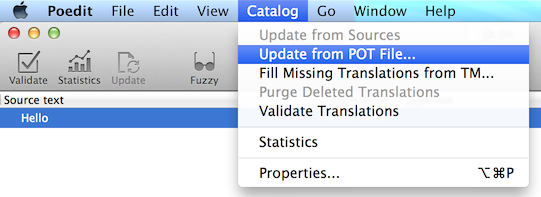

Xitrum ガイド¶

Xitrum ガイドは英語版、韓国語版、ロシア語版、ベトナム語版もあります。
はじめに¶
+--------------------+
| Clients |
+--------------------+
|
+--------------------+
| Netty |
+--------------------+
| Xitrum |
| +----------------+ |
| | HTTP(S) Server | |
| |----------------| |
| | Web framework | | <- Akka, Hazelcast -> Other instances
| +----------------+ |
+--------------------+
| Your app |
+--------------------+
Xitrumは Netty と Akka をベースに構築された非同期でスケーラブルなHTTP(S) WEBフレームワークです。
Xitrum ユーザーの声:
これは本当に印象的な作品である。Liftを除いておそらく最も完全な（そしてとても簡単に使える）Scalaフレームワークです。
XitrumはWebアプリケーションフレームワークの基本的な機能を全て満たしている本物のフルスタックのWebフレームワークである。 とてもうれしいことにそこには、ETag、静的ファイルキャッシュ、自動gzip圧縮があり、 組込みのJSONのコンバータ、インターセプタ、リクエスト/セッション/クッキー/フラッシュの各種スコープ、 サーバー・クライアントにおける統合的バリデーション、内蔵キャッシュ(Hazelcast)、i18N、そしてNettyが組み込まれている。 これらの機能を直ぐに使うことができる。ワオ。
特徴¶
Scalaの思想に基づく型安全。 全てのAPIは型安全であるべくデザインされています。
Nettyの思想に基づく非同期。 リクエストを捌くアクションは直ぐにレスポンスを返す必要はありません。 ロングポーリング、チャンクレスポンス（ストリーミング）、WebSocket、そしてSockJSをサポートしています。
Netty 上に構築された高速HTTP(S) サーバー。 (HTTPSはJavaエンジンとOpenSSLエンジン選択できます。) Xitrumの静的ファイル配信速度は Nginxに匹敵 します。
高速なレスポンスを実現する大規模なサーバサイドおよびクライアントサイド双方のキャッシュシステム。 サーバーレイヤでは小さなファイルはメモリにキャッシュされ、大きなファイルはNIOのzero copyを使用して送信されます。 ウェブフレームワークとしてpage、action、そしてobjectをRailsのスタイルでキャッシュすることができます。 All Google's best practices にあるように、 条件付きGETに対してはクライアントサイドキャッシュが適用されます。 もちろんブラウザにリクエストの再送信を強制させることもできます。
静的ファイルに対する Range requests サポート。 この機能により、スマートフォンに対する動画配信や、全てのクライアントに対するファイルダウンロードの停止と再開を実現できます。
CORS 対応。
JAX-RSとRailsエンジンの思想に基づく自動ルートコレクション。全てのルートを１箇所に宣言する必要はありません。 この機能は分散ルーティングと捉えることができます。この機能のおかげでアプリケーションを他のアプリケーションに取り込むことが可能になります。 もしあなたがブログエンジンを作ったならそれをJARにして別のアプリケーションに取り込むだけですぐにブログ機能が使えるようになるでしょう。 ルーティングには更に2つの特徴があります。 ルートの作成（リバースルーティング）は型安全に実施され、 Swagger Doc を使用したルーティングに関するドキュメント作成も可能となります。
クラスファイルおよびルートは開発時にはXitrumによって自動的にリロードされます。
Viewは独立した Scalate テンプレートとして、 またはScalaによるインラインXMLとして、どちらも型安全に記述することが可能です。
クッキーによる（よりスケーラブルな）、Hazelcast クラスターによる(よりセキュアな)セッション管理。 Hazelcastは（とても早くて、簡単に）プロセス間分散キャッシュも提供してくれます。 このため別のキャッシュサーバーを用意する必要はなくなります。これはAkkaのpubsub機能にも言えることです。
jQuery Validation によるブラウザー、サーバーサイド双方でのバリデーション。
GNU gettext を使用した国際化対応。 翻訳テキストの抽出は自動で行われるため、プロパティファイルに煩わされることはなくなるでしょう。 翻訳とマージ作業には Poedit のようなパワフルなツールが使えます。 gettextは、他のほとんどのソリューションとは異なり、単数系と複数系の両方の形式をサポートしています。
Xitrumは Scalatra よりパワフルに、 Lift より簡単であることで両者のスペクトルを満たすことを目的としています。 Xitrum はScalatraのようにcontroller-firstであり、Liftのような view-first ではありません。 多くの開発者にとって馴染み部会controller-firstスタイルです。
関係プロジェクト サンプルやプラグインなどのプロジェクト一覧をご覧ください。
貢献者¶
Xitrum は オープンソース プロジェクトです。 Google group. のコミュニティに参加してみてください。
貢献者の一覧が 最初の貢献 の順番で記載されています:
(*): 現在アクティブなコアメンバー
チュートリアル¶
本章ではXitrumプロジェクトを作成して実行するところまでを簡単に紹介します。
このチュートリアルではJavaがインストールされたLinux環境を想定しています。
Xitrumプロジェクトの作成¶
新規のプロジェクトを作成するには xitrum-new.zip をダウンロードします。
wget -O xitrum-new.zip https://github.com/xitrum-framework/xitrum-new/archive/master.zip
または:
curl -L -o xitrum-new.zip https://github.com/xitrum-framework/xitrum-new/archive/master.zip
起動¶
Scalaのビルドツールとしてデファクトスタンダードである SBT を使用します。
先ほどダウンロードしたプロジェクトには既に SBT 0.13 が sbt ディレクトリに梱包されています。
SBTを自分でインストールするには、SBTの セットアップガイド を参照してください。
作成したプロジェクトのルートディレクトリで sbt/sbt fgRun と実行することでXitrumが起動します:
unzip xitrum-new.zip
cd xitrum-new
sbt/sbt fgRun
このコマンドは依存ライブラリ( dependencies )のダウンロード, およびプロジェクトのコンパイルを実行後、
quickstart.Boot クラスが実行され、WEBサーバーが起動します。
コンソールには以下の様なルーティング情報が表示されます。
[INFO] Load routes.cache or recollect routes...
[INFO] Normal routes:
GET / quickstart.action.SiteIndex
[INFO] SockJS routes:
xitrum/metrics/channel xitrum.metrics.XitrumMetricsChannel websocket: true, cookie_needed: false
[INFO] Error routes:
404 quickstart.action.NotFoundError
500 quickstart.action.ServerError
[INFO] Xitrum routes:
GET /webjars/swagger-ui/2.0.17/index xitrum.routing.SwaggerUiVersioned
GET /xitrum/xitrum.js xitrum.js
GET /xitrum/metrics/channel xitrum.sockjs.Greeting
GET /xitrum/metrics/channel/:serverId/:sessionId/eventsource xitrum.sockjs.EventSourceReceive
GET /xitrum/metrics/channel/:serverId/:sessionId/htmlfile xitrum.sockjs.HtmlFileReceive
GET /xitrum/metrics/channel/:serverId/:sessionId/jsonp xitrum.sockjs.JsonPPollingReceive
POST /xitrum/metrics/channel/:serverId/:sessionId/jsonp_send xitrum.sockjs.JsonPPollingSend
WEBSOCKET /xitrum/metrics/channel/:serverId/:sessionId/websocket xitrum.sockjs.WebSocket
POST /xitrum/metrics/channel/:serverId/:sessionId/xhr xitrum.sockjs.XhrPollingReceive
POST /xitrum/metrics/channel/:serverId/:sessionId/xhr_send xitrum.sockjs.XhrSend
POST /xitrum/metrics/channel/:serverId/:sessionId/xhr_streaming xitrum.sockjs.XhrStreamingReceive
GET /xitrum/metrics/channel/info xitrum.sockjs.InfoGET
WEBSOCKET /xitrum/metrics/channel/websocket xitrum.sockjs.RawWebSocket
GET /xitrum/metrics/viewer xitrum.metrics.XitrumMetricsViewer
GET /xitrum/metrics/channel/:iframe xitrum.sockjs.Iframe
GET /xitrum/metrics/channel/:serverId/:sessionId/websocket xitrum.sockjs.WebSocketGET
POST /xitrum/metrics/channel/:serverId/:sessionId/websocket xitrum.sockjs.WebSocketPOST
[INFO] HTTP server started on port 8000
[INFO] HTTPS server started on port 4430
[INFO] Xitrum started in development mode
初回起動時には、全てのルーティングが収集されログに出力されます。 この情報はアプリケーションのRESTful APIについてドキュメントを書く場合この情報はとても役立つことでしょう。
ブラウザで http://localhost:8000 もしくは https://localhost:4430 にアクセスしてみましょう。 次のようなリクエスト情報がコンソールから確認できます。
[INFO] GET quickstart.action.SiteIndex, 1 [ms]
Eclipseプロジェクトの作成¶
開発環境に Eclipse を使用する場合
プロジェクトディレクトリで以下のコマンドを実行します:
sbt/sbt eclipse
build.sbt に記載されたプロジェクト設定に応じてEclipse用の .project ファイルが生成されます。
Eclipseを起動してインポートしてください。
IntelliJ IDEAプロジェクトのインポート¶
開発環境に IntelliJ IDEA を使用する場合、 そのScalaプラグインをインストールして、SBTプロジェクトをそのままインポートしてください。 Eclipseの場合のように事前にプロジェクトファイルを生成しなくてもいいです。
自動リロード¶
プログラムを再起動することなく .classファイルをリロード（ホットスワップ)することができます。 ただし、プログラムのパフォーマンスと安定性を維持するため、自動リロード機能は開発時のみ使用することを推奨します。
IDEを使用する場合¶
最新のEclipseやIntelliJのようなIDEを使用して開発、起動を行う場合、 デフォルトでIDEがソースコードの変更を監視して、変更があった場合に自動でコンパイルしてくれます。
SBTを使用する場合¶
SBTを使用する場合、2つのコンソールを用意する必要があります:
一つ目は
sbt/sbt fgRunを実行します。 このコマンドはプログラムを起動して、 .classファイルに変更があった場合にリロードを行います。もう一方は
sbt/sbt ~compileを実行します。 このコマンドはソースコードの変更を監視して、変更があった場合に .classファイルにコンパイルします。
sbtディレクトリには agent7.jar が含まれます。
このライブラリは、カレントディレクトリ（およびサブディレクトリ)の .classファイルのリロードを担当します。
sbt/sbt スクリプトの中で -javaagent:agent7.jar として使用されています。
DCEVM¶
通常のJVMはクラスファイルがリロードされた際、メソッドのボディのみ変更が反映されます。 Java HotSpot VM のオープンソース実装である DCEVM を使用することで、 ロードしたクラスの再定義をより柔軟に行うことができるようになります。
DCEVMは以下の2つの方法でインストールできます:
パッチを使用してインストールを行う場合:
DCEVMを常に有効にすることができます。
もしくはDCEVMを"alternative" JVMとして適用することができます。 この場合、
javaコマンドに-XXaltjvm=dcevmオプションを指定することでDCEVMを使用することができます。 例えば、sbt/sbtスクリプトファイルに-XXaltjvm=dcevmを追記する必要があります。
EclipseやIntelliJのようなIDEを使用している場合、DCEVMをプロジェクトの実行JVMに指定する必要があります。
SBTを使用している場合は、 java コマンドがDCEVMのものを利用できるように PATH 環境変数を設定する必要があります。
DCEVM自体はクラスの変更をサポートしますが、リロードは行わないため、DCEVMを使用する場合も前述の javaagent は必要となります。
詳細は DCEVM - A JRebel free alternative を参照してください。
Action と view¶
Xitrumは3種類のActionを提供しています。
通常の Action 、FutureAction 、そして ActorAction です。
Action¶
import xitrum.Action
import xitrum.annotation.GET
@GET("hello")
class HelloAction extends Action {
def execute() {
respondText("Hello")
}
}
リクエストはNettyのIOスレッド上で直ちに処理されますので、時間かかる処理（ブロック処理）を含めて はいけません。NettyのIOスレッドを長い時間使ってしまうとNettyは新しいコネクションを受信できなく なったりリスポンスを返信できなくなったりします。
FutureAction¶
import xitrum.FutureAction
import xitrum.annotation.GET
@GET("hello")
class HelloAction extends FutureAction {
def execute() {
respondText("hi")
}
}
リクエストは下記の ActorAction と同じスレッドプールが使用されます。これはNettyのスレッドプールとは異なります。
ActorAction¶
ActionをAkka actorとして定義したい場合、ActorAction を継承します。
import scala.concurrent.duration._
import xitrum.ActorAction
import xitrum.annotation.GET
@GET("hello")
class HelloAction extends ActorAction {
def execute() {
// See Akka doc about scheduler
import context.dispatcher
context.system.scheduler.scheduleOnce(3 seconds, self, System.currentTimeMillis())
// See Akka doc about "become"
context.become {
case pastTime =>
respondInlineView(s"It's $pastTime Unix ms 3s ago.")
}
}
}
Actorインスタンスはリクエストが発生時に生成されます。このactorインスタンスはコネクションが切断された時、
または respondText 、 respondView 等を使用してレスポンスが返された時に停止されます。
チャンクレスポンスの場合すぐには停止されず、最後のチャンクが送信された時点で停止されます。
リクエストは「xitrum」（システム名）というAkka actorシステムのスレッドプール上で処理されます。
クライアントへのレスポンス送信¶
Actionからクライアントへレスポンスを返すには以下のメソッドを使用します
respondView: レイアウトファイルを使用または使用せずに、Viewテンプレートファイルを送信しますrespondInlineView: レイアウトファイルを使用または使用せずに、インライン記述されたテンプレートを送信しますrespondText("hello"): レイアウトファイルを使用せずに文字列を送信しますrespondHtml("<html>...</html>"): contentTypeを"text/html"として文字列を送信しますrespondJson(List(1, 2, 3)): ScalaオブジェクトをJSONに変換し、contentTypeを"application/json"として送信しますrespondJs("myFunction([1, 2, 3])")contentTypeを"application/javascript"として文字列を送信しますrespondJsonP(List(1, 2, 3), "myFunction"): 上記2つの組み合わせをJSONPとして送信しますrespondJsonText("[1, 2, 3]"): contentTypeを"application/javascript"として文字列として送信しますrespondJsonPText("[1, 2, 3]", "myFunction"): respondJs 、 respondJsonText の2つの組み合わせをJSONPとして送信しますrespondBinary: バイト配列を送信しますrespondFile: ディスクからファイルを直接送信します。 zero-copy を使用するため非常に高速です。respondEventSource("data", "event"): チャンクレスポンスを送信します
テンプレートViewファイルのレスポンス¶
全てのActionは Scalate のテンプレートViewファイルと関連付ける事ができます。 上記のレスポンスメソッドを使用して直接レスポンスを送信する代わりに独立したViewファイルを使用することができます。
scr/main/scala/mypackage/MyAction.scala:
package mypackage
import xitrum.Action
import xitrum.annotation.GET
@GET("myAction")
class MyAction extends Action {
def execute() {
respondView()
}
def hello(what: String) = "Hello %s".format(what)
}
scr/main/scalate/mypackage/MyAction.jade:
- import mypackage.MyAction
!!! 5
html
head
!= antiCsrfMeta
!= xitrumCss
!= jsDefaults
title Welcome to Xitrum
body
a(href={url}) Path to the current action
p= currentAction.asInstanceOf[MyAction].hello("World")
!= jsForView
xitrumCssXitrumのデフォルトCSSファイルです。削除しても問題ありません。jsDefaultsjQuery, jQuery Validate plugin等を含みます。<head>内に記載する必要があります。jsForViewjsAddToViewによって追加されたjavascriptが出力されます。レイアウトの末尾に記載する必要があります。
テンプレートファイル内では xitrum.Action クラスの全てのメソッドを使用することができます。 また、unescape のようなScalateのユーティリティも使用することができます。Scalateのユーティリティについては Scalate doc を参照してください。
Scalateテンプレートのデフォルトタイプは Jade を使用しています。 ほかには Mustache 、 Scaml 、 Ssp を選択することもできます。 テンプレートのデフォルトタイプを指定は、アプリケーションのconfigディレクトリ内の`xitrum.conf`で設定することができます。
respondView メソッドにtypeパラメータとして"jade"、 "mustache"、"scaml"、"ssp"のいずれか指定することでデフォルトテンプレートタイプをオーバーライドすることも可能です。
val options = Map("type" ->"mustache")
respondView(options)
currentActionのキャスト¶
現在のActionのインスタンスを正確に指定したい場合、currentAction を指定したActionにキャストします。
p= currentAction.asInstanceOf[MyAction].hello("World")
複数行で使用する場合、キャスト処理は1度だけ呼び出します。
- val myAction = currentAction.asInstanceOf[MyAction]; import myAction._
p= hello("World")
p= hello("Scala")
p= hello("Xitrum")
Mustache¶
Mustacheについての参考資料:
Mustachのシンタックスは堅牢なため、Jadeで可能な処理の一部は使用できません。
Actionから何か値を渡す場合、at メソッドを使用します。
Action:
at("name") = "Jack"
at("xitrumCss") = xitrumCss
Mustache template:
My name is {{name}}
{{xitrumCss}}
注意:以下のキーは予約語のため、 at メソッドでScalateテンプレートに渡すことはできません。
"context":
unescape等のメソッドを含むScalateのユーティリティオブジェクト"helper": 現在のActionオブジェクト
CoffeeScript¶
:coffeescript filter を使用して CoffeeScriptをテンプレート内に展開することができます。
body
:coffeescript
alert "Hello, Coffee!"
出力結果:
<body>
<script type='text/javascript'>
//<![CDATA[
(function() {
alert("Hello, Coffee!");
}).call(this);
//]]>
</script>
</body>
注意: ただしこの処理は 低速 です。
jade+javascript+1thread: 1-2ms for page
jade+coffesscript+1thread: 40-70ms for page
jade+javascript+100threads: ~40ms for page
jade+coffesscript+100threads: 400-700ms for page
高速で動作させるにはあらかじめCoffeeScriptからJavaScriptを生成しておく必要があります。
レイアウト¶
respondView または respondInlineView を使用してViewを送信した場合、
Xitrumはその結果の文字列を、renderedView の変数としてセットします。
そして現在のActionの layout メソッドが実行されます。
ブラウザーに送信されるデータは最終的にこのメソッドの結果となります。
デフォルトでは、layout メソッドは単に renderedView を呼び出します。
もし、この処理に追加で何かを加えたい場合、オーバーライドします。もし、 renderedView をメソッド内にインクルードした場合、
そのViewはレイアウトの一部としてインクルードされます。
ポイントは layout は現在のActionのViewが実行された後に呼ばれるということです。
そしてそこで返却される値がブラウザーに送信される値となります。
このメカニズムはとてもシンプルで魔法ではありません。便宜上Xitrumにはレイアウトが存在しないと考えることができます。
そこにはただ layout メソッドがあるだけで、全てをこのメソッドで賄うことができます。
典型的な例として、共通レイアウトを親クラスとして使用するパターンを示します。
src/main/scala/mypackage/AppAction.scala
package mypackage
import xitrum.Action
trait AppAction extends Action {
override def layout = renderViewNoLayout[AppAction]()
}
src/main/scalate/mypackage/AppAction.jade
!!! 5
html
head
!= antiCsrfMeta
!= xitrumCss
!= jsDefaults
title Welcome to Xitrum
body
!= renderedView
!= jsForView
src/main/scala/mypackage/MyAction.scala
package mypackage
import xitrum.annotation.GET
@GET("myAction")
class MyAction extends AppAction {
def execute() {
respondView()
}
def hello(what: String) = "Hello %s".format(what)
}
scr/main/scalate/mypackage/MyAction.jade:
- import mypackage.MyAction
a(href={url}) Path to the current action
p= currentAction.asInstanceOf[MyAction].hello("World")
独立したレイアウトファイルを使用しないパターン¶
AppAction.scala
import xitrum.Action
import xitrum.view.DocType
trait AppAction extends Action {
override def layout = DocType.html5(
<html>
<head>
{antiCsrfMeta}
{xitrumCss}
{jsDefaults}
<title>Welcome to Xitrum</title>
</head>
<body>
{renderedView}
{jsForView}
</body>
</html>
)
}
respondViewにレイアウトを直接指定するパターン¶
val specialLayout = () =>
DocType.html5(
<html>
<head>
{antiCsrfMeta}
{xitrumCss}
{jsDefaults}
<title>Welcome to Xitrum</title>
</head>
<body>
{renderedView}
{jsForView}
</body>
</html>
)
respondView(specialLayout _)
respondInlineView¶
通常ViewはScalateファイルに記載しますが、直接Actionに記載することもできます。
import xitrum.Action
import xitrum.annotation.GET
@GET("myAction")
class MyAction extends Action {
def execute() {
val s = "World" // Will be automatically HTML-escaped
respondInlineView(
<p>Hello <em>{s}</em>!</p>
)
}
}
renderFragment¶
MyAction.jadeが
scr/main/scalate/mypackage/MyAction.jade
にある場合、同じディレクトリにあるフラグメント
scr/main/scalate/mypackage/_MyFragment.jade
を返す場合:
renderFragment[MyAction]("MyFragment")
現在のActionが``MyAction``の場合、以下のように省略できます。
renderFragment("MyFragment")
別のアクションに紐付けられたViewをレスポンスする場合¶
次のシンタックスを使用します respondView[ClassName]():
package mypackage
import xitrum.Action
import xitrum.annotation.{GET, POST}
@GET("login")
class LoginFormAction extends Action {
def execute() {
// Respond scr/main/scalate/mypackage/LoginFormAction.jade
respondView()
}
}
@POST("login")
class DoLoginAction extends Action {
def execute() {
val authenticated = ...
if (authenticated)
redirectTo[HomeAction]()
else
// Reuse the view of LoginFormAction
respondView[LoginFormAction]()
}
}
ひとつのアクションに複数のViewを紐付ける方法¶
package mypackage
import xitrum.Action
import xitrum.annotation.GET
// These are non-routed actions, for mapping to view template files:
// scr/main/scalate/mypackage/HomeAction_NormalUser.jade
// scr/main/scalate/mypackage/HomeAction_Moderator.jade
// scr/main/scalate/mypackage/HomeAction_Admin.jade
trait HomeAction_NormalUser extends Action
trait HomeAction_Moderator extends Action
trait HomeAction_Admin extends Action
@GET("")
class HomeAction extends Action {
def execute() {
val userType = ...
userType match {
case NormalUser => respondView[HomeAction_NormalUser]()
case Moderator => respondView[HomeAction_Moderator]()
case Admin => respondView[HomeAction_Admin]()
}
}
}
上記のようにルーティングとは関係ないアクションを記述することは一見して面倒ですが、 この方法はプログラムをタイプセーフに保つことができます。
またはテンプレートのパスを文字列で指定します:
respondView("mypackage/HomeAction_NormalUser")
respondView("mypackage/HomeAction_Moderator")
respondView("mypackage/HomeAction_Admin")
renderView, renderViewNoLayout, respondView, respondViewNoLayout では src/main/scalate からのテンプレートファイルへのパス、
renderFragment にはフラグメントを配置したディレクトリーへのパスをクラスの代わりに指定することができます。
Component¶
複数のViewに対して組み込むことができる再利用可能なコンポーネントを作成することもできます。 コンポーネントのコンセプトはアクションに非常に似ています。 以下のような特徴があります。
コンポーネントはルートを持ちません。すなわち
executeメソッドは不要となります。コンポーネントは全レスポンスを返すわけではありません。 断片的なviewを "render" するのみとなります。 そのため、コンポーネント内部では
respondXXXの代わりにrenderXXXを呼び出す必要があります。アクションのように、コンポーネントは単一のまたは複数のViewと紐付けるたり、あるいは紐付けないで使用することも可能です。
package mypackage
import xitrum.{FutureAction, Component}
import xitrum.annotation.GET
class CompoWithView extends Component {
def render() = {
// Render associated view template, e.g. CompoWithView.jade
// Note that this is renderView, not respondView!
renderView()
}
}
class CompoWithoutView extends Component {
def render() = {
"Hello World"
}
}
@GET("foo/bar")
class MyAction extends FutureAction {
def execute() {
respondView()
}
}
MyAction.jade:
- import mypackage._
!= newComponent[CompoWithView]().render()
!= newComponent[CompoWithoutView]().render()
RESTful APIs¶
XitrumではiPhone、Androidなどのアプリケーション用のRESTful APIsを非常に簡単に記述することができます。
import xitrum.Action
import xitrum.annotation.GET
@GET("articles")
class ArticlesIndex extends Action {
def execute() {...}
}
@GET("articles/:id")
class ArticlesShow extends Action {
def execute() {...}
}
POST、 PUT、 PATCH、 DELETEそしてOPTIONSと同様に XitrumはHEADリクエストをボディが空のGETリクエストとして自動的に扱います。
通常のブラウザーのようにPUTとDELETEをサポートしていないHTTPクライアントにおいて、
PUTとDELETEを実現するには、リクエストボディに _method=put や、 _method=delete を含めることで
可能になります。
アプリケーションの起動時にXitrumはアプリケーションをスキャンし、ルーティングテーブルを作成し出力します。 以下の様なログからアプリケーションがどのようなAPIをサポートしているか知ることができます。
[INFO] Routes:
GET /articles quickstart.action.ArticlesIndex
GET /articles/:id quickstart.action.ArticlesShow
ルーティングはJAX-RSとRailsエンジンの思想に基づいて自動で収集されます。 全てのルートを１箇所に宣言する必要はありません。 この機能は分散ルーティングと捉えることができます。この機能のおかげでアプリケーションを他のアプリケーションに取り込むことが可能になります。 もしあなたがブログエンジンを作ったならそれをJARにして別のアプリケーションに取り込むだけですぐにブログ機能が使えるようになるでしょう。 ルーティングには更に2つの特徴があります。 ルートの作成（リバースルーティング）は型安全に実施され、 Swagger Doc を使用したルーティングに関するドキュメント作成も可能となります。
ルートのキャッシング¶
起動スピード改善のため、ルートは routes.cache ファイルにキャッシュされます。
開発時には target にあるクラスファイル内のルートはキャッシュされません。
もしルートを含む依存ライブラリを更新した場合、 routes.cache ファイルを削除してください。
また、このファイルはソースコードリポジトリにコミットしないよう気をつけましょう。
ルートの優先順位(first、last)¶
以下の様なルートを作成した場合
/articles/:id --> ArticlesShow
/articles/new --> ArticlesNew
2番目のルートを優先させるには @First アノテーションを追加します。
import xitrum.annotation.{GET, First}
@GET("articles/:id")
class ArticlesShow extends Action {
def execute() {...}
}
@First // This route has higher priority than "ArticlesShow" above
@GET("articles/new")
class ArticlesNew extends Action {
def execute() {...}
}
Last も同じように使用できます。
Actionへの複数パスの関連付け¶
@GET("image", "image/:format")
class Image extends Action {
def execute() {
val format = paramo("format").getOrElse("png")
// ...
}
}
ドットを含むルート¶
@GET("articles/:id", "articles/:id.:format")
class ArticlesShow extends Action {
def execute() {
val id = param[Int]("id")
val format = paramo("format").getOrElse("html")
// ...
}
}
パスの残り部分の取得¶
/ 文字が特別でパラメータ名に含まれられません。/ 文字を使いたい場合、以下のように書きます:
GET("service/:id/proxy/:*")
以下のパスがマッチされます:
/service/123/proxy/http://foo.com/bar
:* を取得:
val url = param("*") // "http://foo.com/bar"となります
アクションへのリンク¶
Xitrumは型安全指向です。URLは直截記載せずにいかのように参照します:
<a href={url[ArticlesShow]("id" -> myArticle.id)}>{myArticle.title}</a>
他のアクションへのリダイレクト¶
redirectTo[AnotherAction]() を使用します。
リダイレクトについては こちら（英語） を参照してください。
import xitrum.Action
import xitrum.annotation.{GET, POST}
@GET("login")
class LoginInput extends Action {
def execute() {...}
}
@POST("login")
class DoLogin extends Action {
def execute() {
...
// After login success
redirectTo[AdminIndex]()
}
}
GET("admin")
class AdminIndex extends Action {
def execute() {
...
// Check if the user has not logged in, redirect him to the login page
redirectTo[LoginInput]()
}
}
また、redirecToThis() を使用して現在のアクションへリダイレクトさせることも可能です。
他のアクションへのフォワード¶
forwardTo[AnotherAction]() を使用します。前述の redirectTo ではブラウザは別のリクエストを送信しますが、
forwardTo ではリクエストは引き継がれます。
Ajaxリクエストの判定¶
isAjax を使用します。
// In an action
val msg = "A message"
if (isAjax)
jsRender("alert(" + jsEscape(msg) + ")")
else
respondText(msg)
CSRF対策¶
GET以外のリクエストに対して、Xitrumはデフォルトで Cross-site request forgery 対策を実施します。
antiCsrfMeta Tagsをレイアウト内に記載した場合:
import xitrum.Action
import xitrum.view.DocType
trait AppAction extends Action {
override def layout = DocType.html5(
<html>
<head>
{antiCsrfMeta}
{xitrumCss}
{jsDefaults}
<title>Welcome to Xitrum</title>
</head>
<body>
{renderedView}
{jsForView}
</body>
</html>
)
}
出力される <head> は以下のようになります:
<!DOCTYPE html>
<html>
<head>
...
<meta name="csrf-token" content="5402330e-9916-40d8-a3f4-16b271d583be" />
...
</head>
...
</html>
xitrum.js をテンプレート内で使用した場合、
このトークンは X-CSRF-Token ヘッダーとしてGETを除く全てのjQueryによるAjaxリクエストに含まれます。
xitrum.jsは jsDefaults タグを使用することでロードされます。
もし jsDefaults を使用したくない場合、以下のようにテンプレートに記載することですることでxitrum.jsをロードすることができます。
<script type="text/javascript" src={url[xitrum.js]}></script>
CSRF対策インプットとCSRF対策トークン¶
XitrumはCSRF対策トークンをリクエストヘッダーの X-CSRF-Token から取得します。
もしリクエストヘッダーが存在しない場合、Xitrumはリクエストボディの csrf-token から取得します。
（URLパラメータ内には含まれません。）
前述したメタタグとxitrum.jsを使用せずにformを作成する場合、antiCsrfInput または
antiCsrfToken を使用する必要があります。
form(method="post" action={url[AdminAddGroup]})
!= antiCsrfInput
form(method="post" action={url[AdminAddGroup]})
input(type="hidden" name="csrf-token" value={antiCsrfToken})
CSRFチェックの省略¶
スマートフォン向けアプリケーションなどでCSRFチェックを省略したい場合、
xitrum.SkipCsrfCheck を継承してActionを作成します。
import xitrum.{Action, SkipCsrfCheck}
import xitrum.annotation.POST
trait Api extends Action with SkipCsrfCheck
@POST("api/positions")
class LogPositionAPI extends Api {
def execute() {...}
}
@POST("api/todos")
class CreateTodoAPI extends Api {
def execute() {...}
}
ルーティングの操作¶
Xitrumは起動時に自動でルーティングを収集します。 収集されたルーティングにアクセスするには、xitrum.Config.routes を使用します。
例:
import xitrum.{Config, Server}
object Boot {
def main(args: Array[String]) {
// サーバーをスタートさせる前にルーティングを操作します。
val routes = Config.routes
// クラスを指定してルートを削除する場合
routes.removeByClass[MyClass]()
if (demoVersion) {
// prefixを指定してルートを削除する場合
routes.removeByPrefix("premium/features")
// '/'が先頭にある場合も同じ効果が得られます
routes.removeByPrefix("/premium/features")
}
...
Server.start()
}
}
リクエストコンテンツの取得¶
通常リクエストコンテンツタイプが application/x-www-form-urlencoded 以外の場合、
以下のようにしてリクエストコンテンツを取得することができます。
文字列として取得:
val body = requestContentString
文字列として取得し、JSONへのパース:
val myJValue = requestContentJValue // => JSON4S (http://json4s.org) JValue
val myMap = xitrum.util.SeriDeseri.fromJValue[Map[String, Int]](myJValue)
より詳細にリクエストを扱う場合、 request.getContent を使用することで ByteBuf としてリクエストを取得することができます。
SwaggerによるAPIドキュメンテーション¶
Swagger を使用してAPIドキュメントを作成することができます。
@Swagger アノテーションをドキュメント化したいActionに記述します。
Xitrumはアノテーション情報から /xitrum/swagger.json を作成します。
このファイルを Swagger UI で読み込むことでインタラクティブなAPIドキュメンテーションとなります。
XitrumはSwagger UI を内包しており、 /xitrum/swagger-ui というパスにルーティングします。
例: http://localhost:8000/xitrum/swagger-ui.

サンプル を見てみましょう。
import xitrum.{Action, SkipCsrfCheck}
import xitrum.annotation.{GET, Swagger}
@Swagger(
Swagger.Tags("APIs to create images"),
Swagger.Description("Dimensions should not be bigger than 2000 x 2000"),
Swagger.OptStringQuery("text", "Text to render on the image, default: Placeholder"),
Swagger.Produces("image/png"),
Swagger.Response(200, "PNG image"),
Swagger.Response(400, "Width or height is invalid or too big")
)
trait ImageApi extends Action with SkipCsrfCheck {
lazy val text = paramo("text").getOrElse("Placeholder")
}
@GET("image/:width/:height")
@Swagger( // <-- Inherits other info from ImageApi
Swagger.Summary("Generate rectangle image"),
Swagger.IntPath("width"),
Swagger.IntPath("height")
)
class RectImageApi extends Api {
def execute {
val width = param[Int]("width")
val height = param[Int]("height")
// ...
}
}
@GET("image/:width")
@Swagger( // <-- Inherits other info from ImageApi
Swagger.Summary("Generate square image"),
Swagger.IntPath("width")
)
class SquareImageApi extends Api {
def execute {
val width = param[Int]("width")
// ...
}
}
/xitrum/swagger にアクセスすると
SwaggerのためのJSON
が生成されます。
Swagger UIはこの情報をもとにインタラクティブなAPIドキュメンテーションを作成します。
ここででてきたSwagger.IntPath、Swagger.OptStringQuery以外にも、BytePath, IntQuery, OptStringFormなど 以下の形式でアノテーションを使用することができます。
<Value type><Param type>(必須パラメータ)Opt<Value type><Param type>(オプションパラメータ)
Value type: Byte, Int, Int32, Int64, Long, Number, Float, Double, String, Boolean, Date, DateTime
Param type: Path, Query, Body, Header, Form
詳しくは value type 、 param type を参照してください。
テンプレートエンジン¶
renderViewやrenderFragment, respondView 実行時には 設定ファイルで指定したテンプレートエンジンが使用されます。
テンプレートエンジンの設定¶
config/xitrum.conf において テンプレートエンジンはその種類に応じて以下ように設定することができます。
template = my.template.EngineClassName
または:
template {
"my.template.EngineClassName" {
option1 = value1
option2 = value2
}
}
デフォルトのテンプレートエンジンは xitrum-scalate です。
テンプレートエンジンの削除¶
一般にRESTfulなAPIのみを持つプロジェクトを作成した場合、renderView、renderFragment、あるいはrespondView
は不要となります。このようなケースではテンプレートエンジンを削除することでプロジェクトを軽量化することができます。
その場合 config/xitrum.conf から templateEngine の設定をコメントアウトします。
テンプレートエンジンの作成¶
独自のテンプレートエンジンを作成する場合、 xitrum.view.TemplateEngine を継承したクラスを作成します。 そして作成したクラスを config/xitrum.conf にて指定します。
参考例: xitrum-scalate
ポストバック¶
Webアプリケーションには主に以下の2つのユースケースが考えられます。
機械向けのサーバー機能: スマートフォンや他のWebサイトのためのWebサービスとしてRESTfulなAPIを作成する必要があるケース
人間向けのサーバー機能: インタラクティブなWebページを作成する必要があるケース
WebフレームワークとしてXitrumはこれら2つのユースケースを簡単に解決することを目指しています。 1つ目のユースケースには、RESTful actions を適用することで対応し、 2つ目のユースケースには、Ajaxフォームポストバックを適用することで対応します。 ポストバックのアイデアについては以下のリンク（英語）を参照することを推奨します。
Xitrumのポストバック機能は Nitrogen を参考にしています。
レイアウト¶
AppAction.scala
import xitrum.Action
import xitrum.view.DocType
trait AppAction extends Action {
override def layout = DocType.html5(
<html>
<head>
{antiCsrfMeta}
{xitrumCss}
{jsDefaults}
<title>Welcome to Xitrum</title>
</head>
<body>
{renderedView}
{jsForView}
</body>
</html>
)
}
フォーム¶
Articles.scala
import xitrum.annotation.{GET, POST, First}
import xitrum.validator._
@GET("articles/:id")
class ArticlesShow extends AppAction {
def execute() {
val id = param("id")
val article = Article.find(id)
respondInlineView(
<h1>{article.title}</h1>
<div>{article.body}</div>
)
}
}
@First // Force this route to be matched before "show"
@GET("articles/new")
class ArticlesNew extends AppAction {
def execute() {
respondInlineView(
<form data-postback="submit" action={url[ArticlesCreate]}>
<label>Title</label>
<input type="text" name="title" class="required" /><br />
<label>Body</label>
<textarea name="body" class="required"></textarea><br />
<input type="submit" value="Save" />
</form>
)
}
}
@POST("articles")
class ArticlesCreate extends AppAction {
def execute() {
val title = param("title")
val body = param("body")
val article = Article.save(title, body)
flash("Article has been saved.")
jsRedirectTo(show, "id" -> article.id)
}
}
submit イベントがJavaScript上で実行された時、フォームの内容は ArticlesCreate へポストバックされます。
<form> の action 属性は暗号化され、暗号化されたURLはCSRF対策トークンとして機能します。
formエレメント以外への適用¶
ポストバックはform以外のHTMLエレメントにも適用することができます。
リンク要素への適用例:
<a href="#" data-postback="click" action={url[LogoutAction]}>Logout</a>
リンク要素をクリックした場合LogoutActionへポストバックが行われます。
コンファームダイアログ¶
コンファームダイアログを表する場合:
<a href="#" data-postback="click"
action={url[LogoutAction]}
data-confirm="Do you want to logout?">Logout</a>
"キャンセル"がクリックされた場合、ポストバックの送信は行われません。
パラメーターの追加¶
formエレメントに対して <input type="hidden"... を追加することで追加パラメーターをポストバックリクエストに付与することができます。
formエレメント以外に対しては、以下のように指定します:
<a href="#"
data-postback="click"
action={url[ArticlesDestroy]("id" -> item.id)}
data-params="_method=delete"
data-confirm={"Do you want to delete %s?".format(item.name)}>Delete</a>
または以下のように別のエレメントに指定することも可能です:
<form id="myform" data-postback="submit" action={url[SiteSearch]}>
Search:
<input type="text" name="keyword" />
<a class="pagination"
href="#"
data-postback="click"
data-form="#myform"
action={url[SiteSearch]("page" -> page)}>{page}</a>
</form>
#myform はJQueryのセレクタ形式で追加パラメーターを含むエレメントを指定します。
ローディングイメージの表示¶
以下のローディングイメージがAjax通信中に表示されます:

カスタマイズするには、テンプレート内で、jsDefaults (これは xitrum.js
をインクルードするための関数です) の後に次を追加します:
// target: The element that triggered the postback
xitrum.ajaxLoading = function(target) {
// Called when the animation should be displayed when the Ajax postback is being sent.
var show = function() {
...
};
// Called when the animation should be stopped after the Ajax postback completes.
var hide = function() {
...
};
return {show: show, hide: hide};
};
XML¶
ScalaではXMLリテラルを記述することが可能です。Xitrumではこの機能をテンプレートエンジンとして利用しています。
ScalaコンパイラによるXMLシンタックスチェックは、Viewの型安全につながります。
ScalaによるXMLの自動的なエスケープは、XSS 攻撃を防ぎます。
いくつかのTipsを示します。
XMLのアンエスケープ¶
scala.xml.Unparsed を使用する場合:
import scala.xml.Unparsed
<script>
{Unparsed("if (1 < 2) alert('Xitrum rocks');")}
</script>
<xml:unparsed> を使用する場合:
<script>
<xml:unparsed>
if (1 < 2) alert('Xitrum rocks');
</xml:unparsed>
</script>
<xml:unparsed> は実際の出力には含まれません:
<script>
if (1 < 2) alert('Xitrum rocks');
</script>
XMLエレメントのグループ化¶
<div id="header">
{if (loggedIn)
<xml:group>
<b>{username}</b>
<a href={url[LogoutAction]}>Logout</a>
</xml:group>
else
<xml:group>
<a href={url[LoginAction]}>Login</a>
<a href={url[RegisterAction]}>Register</a>
</xml:group>}
</div>
<xml:group> は実際の出力には含まれません。ユーザーがログイン状態の場合、以下のように出力されます:
<div id="header">
<b>My username</b>
<a href="/login">Logout</a>
</div>
XHTMLの描画¶
XitrumはviewとレイアウトはXHTMLとして出力します。 レアケースではありますが、もしあなたが直接、出力内容を定義する場合、以下のコードが示す内容に注意してください。
import scala.xml.Xhtml
val br = <br />
br.toString // => <br></br>, この場合ブラウザによってはbrタグが2つあると認識されることがあります。
Xhtml.toXhtml(<br />) // => "<br />"
JavaScript と JSON¶
JavaScript¶
XitrumはjQueryを内包しています。
またいくつかのjsXXXヘルパー関数を提供しています。
JavaScriptフラグメントをViewに追加する方法¶
アクション内では jsAddToView を呼び出します。（必要であれば何度でも呼び出すことができます）:
class MyAction extends AppAction {
def execute() {
...
jsAddToView("alert('Hello')")
...
jsAddToView("alert('Hello again')")
...
respondInlineView(<p>My view</p>)
}
}
レイアウト内では jsForView を呼び出します:
import xitrum.Action
import xitrum.view.DocType
trait AppAction extends Action {
override def layout = DocType.html5(
<html>
<head>
{antiCsrfMeta}
{xitrumCss}
{jsDefaults}
</head>
<body>
<div id="flash">{jsFlash}</div>
{renderedView}
{jsForView}
</body>
</html>
)
JavaScriptを直接レスポンスする方法¶
Javascriptをレスポンスする場合:
jsRespond("$('#error').html(%s)".format(jsEscape(<p class="error">Could not login.</p>)))
Javascriptでリダイレクトさせる場合:
jsRedirectTo("http://cntt.tv/")
jsRedirectTo[LoginAction]()
JSON¶
Xitrumは JSON4S を内包しています。 JSONのパースと生成についてはJSON4Sを一読することを推奨します。
ScalaのcaseオブジェクトをJSON文字列に変換する場合:
import xitrum.util.SeriDeseri
case class Person(name: String, age: Int, phone: Option[String])
val person1 = Person("Jack", 20, None)
val json = SeriDeseri.toJson(person)
val person2 = SeriDeseri.fromJson(json)
JSONをレスポンスする場合:
val scalaData = List(1, 2, 3) // An example
respondJson(scalaData)
JSONはネストした構造が必要な設定ファイルを作成する場合に適しています。
参照 設定ファイルの読み込み
非同期レスポンス¶
Actionからクライアントへレスポンスを返すには以下のメソッドを使用します
respondView: レイアウトファイルを使用または使用せずに、Viewテンプレートファイルを送信しますrespondInlineView: レイアウトファイルを使用または使用せずに、インライン記述されたテンプレートを送信しますrespondText("hello"): レイアウトファイルを使用せずに文字列を送信しますrespondHtml("<html>...</html>"): contentTypeを"text/html"として文字列を送信しますrespondJson(List(1, 2, 3)): ScalaオブジェクトをJSONに変換し、contentTypeを"application/json"として送信しますrespondJs("myFunction([1, 2, 3])")contentTypeを"application/javascript"として文字列を送信しますrespondJsonP(List(1, 2, 3), "myFunction"): 上記2つの組み合わせをJSONPとして送信しますrespondJsonText("[1, 2, 3]"): contentTypeを"application/javascript"として文字列として送信しますrespondJsonPText("[1, 2, 3]", "myFunction"): respondJs 、 respondJsonText の2つの組み合わせをJSONPとして送信しますrespondBinary: バイト配列を送信しますrespondFile: ディスクからファイルを直接送信します。 zero-copy を使用するため非常に高速です。respondEventSource("data", "event"): チャンクレスポンスを送信します
Xitrumは自動でデフォルトレスポンスを送信しません。自分で明確に上記の``respondXXX``を呼ばなければなりません。 呼ばなければ、XitrumがそのHTTP接続を保持します。あとで``respondXXX``を読んでもいいです。
接続がopen状態になっているかを確認するには``channel.isOpen``を呼びます。addConnectionClosedListener
でコールバックを登録することもできませす。
addConnectionClosedListener {
// 切断されました。
// リソース開放などをする。
}
非同期なのでレスポンスはすぐに送信されません。respondXXX の戻り値が
ChannelFuture
となります。それを使って実際にレスポンスを送信されるコールバックを登録できます。
例えばレスポンスの送信あとに切断するには:
import io.netty.channel.{ChannelFuture, ChannelFutureListener}
val future = respondText("Hello")
future.addListener(new ChannelFutureListener {
def operationComplete(future: ChannelFuture) {
future.getChannel.close()
}
})
より短い例:
respondText("Hello").addListener(ChannelFutureListener.CLOSE)
WebSocket¶
import scala.runtime.ScalaRunTime
import xitrum.annotation.WEBSOCKET
import xitrum.{WebSocketAction, WebSocketBinary, WebSocketText, WebSocketPing, WebSocketPong}
@WEBSOCKET("echo")
class EchoWebSocketActor extends WebSocketAction {
def execute() {
// ここでセッションデータ、リクエストヘッダなどを抽出できますが
// respondTextやrespondViewなどは使えません。
// レスポンスするには以下のようにrespondWebSocketXXXを使ってください。
log.debug("onOpen")
context.become {
case WebSocketText(text) =>
log.info("onTextMessage: " + text)
respondWebSocketText(text.toUpperCase)
case WebSocketBinary(bytes) =>
log.info("onBinaryMessage: " + ScalaRunTime.stringOf(bytes))
respondWebSocketBinary(bytes)
case WebSocketPing =>
log.debug("onPing")
case WebSocketPong =>
log.debug("onPong")
}
}
override def postStop() {
log.debug("onClose")
super.postStop()
}
}
リクエストが来る際に上記のアクターインスタンスが生成されます。次のときにアクターが停止されます:
コネクションが切断されるとき
WebSocketのcloseフレームが受信されるまたは送信されるとき
WebSocketフレームを送信するメソッド:
respondWebSocketTextrespondWebSocketBinaryrespondWebSocketPingrespondWebSocketClose
respondWebSocketPong はありません。Xitrumがpingフレームを受信したら自動でpongフレームを
送信するからです。
上記のWebSocketアクションへのURLを取得するには:
// Scalateテンプレートファイルなどで
val url = absWebSocketUrl[EchoWebSocketActor]
SockJS¶
SockJS とはWebSocketのようなAPIを提供 するJavaScriptライブラリです。WebSocketを対応しないブラウザで使います。SockJSがブラウザがの WebSocketの機能の存在を確認し、存在しない場合、他の適切な通信プロトコルへフォルバックします。
WebSocket対応ブラウザ関係なくすべてのブラウザでWebSocket APIを使いたい場合、WebSocketを 直接使わないでSockJSを使ったほうがいいです。
<script>
var sock = new SockJS('http://mydomain.com/path_prefix');
sock.onopen = function() {
console.log('open');
};
sock.onmessage = function(e) {
console.log('message', e.data);
};
sock.onclose = function() {
console.log('close');
};
</script>
XitrumがSockJSライブラリのファイルを含めており、テンプレートなどで以下のように書くだけでいいです:
...
html
head
!= jsDefaults
...
SockJSは サーバー側の特別処理 が必要ですが、 Xitrumがその処理をやってくれるのです。
import xitrum.{Action, SockJsAction, SockJsText}
import xitrum.annotation.SOCKJS
@SOCKJS("echo")
class EchoSockJsActor extends SockJsAction {
def execute() {
// ここでセッションデータ、リクエストヘッダなどを抽出できますが
// respondTextやrespondViewなどは使えません。
// レスポンスするには以下のようにrespondSockJsXXXを使ってください。
log.info("onOpen")
context.become {
case SockJsText(text) =>
log.info("onMessage: " + text)
respondSockJsText(text)
}
}
override def postStop() {
log.info("onClose")
super.postStop()
}
}
新しいSockJSセッションが生成されるとき上記のアクターインスタンスが生成されます。セッションが 停止されるときにアクターが停止されます。
SockJSフレームを送信するには:
respondSockJsTextrespondSockJsClose
クッキーがSockJsと合わないです。認証を実装するには自分でトークンを生成しSockJsページを埋め込んで、
ブラウザ側からサーバー側へSockJs接続ができたらそのトークンを送信し認証すれば良い。クッキーが
本質的にはそのようなメカニズムで動きます。
SockJSクラスタリングを構築するには Akkaでサーバーをクラスタリングする 説明をご覧ください。
Chunkレスポンス¶
Chunkレスポンス を送信するには:
setChunkedを呼ぶrespondXXXを呼ぶ（複数回呼んでよい）最後に
respondLastChunkを呼ぶ
Chunkレスポンスはいろいろな応用があります。例えばメモリがかかる大きなCSVファイルを一括で生成 できない場合、生成しながら送信して良い:
// 「Cache-Control」ヘッダが自動で設定されます:
// 「no-store, no-cache, must-revalidate, max-age=0」
//
// 因みに 「Pragma: no-cache」 ヘッダはレスポンスでなくリクエストのためです:
// http://palizine.plynt.com/issues/2008Jul/cache-control-attributes/
setChunked()
val generator = new MyCsvGenerator
generator.onFirstLine { line =>
val future = respondText(header, "text/csv")
future.addListener(new ChannelFutureListener {
def operationComplete(future: ChannelFuture) {
if (future.isSuccess) generator.next()
}
}
}
generator.onNextLine { line =>
val future = respondText(line)
future.addListener(new ChannelFutureListener {
def operationComplete(future: ChannelFuture) {
if (future.isSuccess) generator.next()
}
})
}
generator.onLastLine { line =>
val future = respondText(line)
future.addListener(new ChannelFutureListener {
def operationComplete(future: ChannelFuture) {
if (future.isSuccess) respondLastChunk()
}
})
}
generator.generate()
注意:
ヘッダが最初の
respondXXXで送信されます。末尾ヘッダがオプションで
respondLastChunkに設定できます。ページとアクションキャッシュ はchunkレスポンスとは使えません。
Chunkレスポンスを ActorAction の組み合わせて
Facebook BigPipe
が実装できます。
無限iframe¶
Chunkレスポンスで Comet を 実装することが 可能 です。
Iframeを含めるページ:
...
<script>
var functionForForeverIframeSnippetsToCall = function() {...}
</script>
...
<iframe width="1" height="1" src="path/to/forever/iframe"></iframe>
...
無限 <script> を生成するアクションで:
// 準備
setChunked()
// Firefox対応
respondText("<html><body>123", "text/html")
// curlを含む多くのクライアントが<script>をすぐに出しません。
// 2KB仮データで対応。
for (i <- 1 to 100) respondText("<script></script>\n")
そのあと実際データを送信するには:
if (channel.isOpen)
respondText("<script>parent.functionForForeverIframeSnippetsToCall()</script>\n")
else
// 切断されました。リソースなどを開放。
// ``addConnectionClosedListener``を使って良い。
Event Source¶
参考: http://dev.w3.org/html5/eventsource/
Event SourceはデータがUTF-8でchunkレスポンスの一種です。
Event Sourceをレスポンスするには respondEventSource を呼んでください（複数回可）:
respondEventSource("data1", "event1") // イベント名が「event1」となります
respondEventSource("data2") // イベント名がデフォルトで「message」となります
静的ファイル¶
ディスク上の静的ファイルの配信¶
プロジェクトディレクトリーレイアウト:
config
public
favicon.ico
robots.txt
404.html
500.html
img
myimage.png
css
mystyle.css
js
myscript.js
src
build.sbt
public ディレクトリ内に配置された静的ファイルはXitrumにより自動的に配信されます。
配信されるファイルのURLは以下のようになります。
/img/myimage.png
/css/mystyle.css
/css/mystyle.min.css
プログラムからそのURLを参照するには以下のように指定します:
<img src={publicUrl("img/myimage.png")} />
開発環境で非圧縮ファイルをレスポンスし、本番環境でその圧縮ファイルをレスポンスするには(例: 上記の mystyle.cssとmystyle.min.css):
<img src={publicUrl("css", "mystyle.css", "mystyle.min.css")} />
ディスク上の静的ファイルをアクションからレスポンスするには respondFile を使用します。
respondFile("/absolute/path")
respondFile("path/relative/to/the/current/working/directory")
静的ファイルの配信速度を最適化するため、
ファイル存在チェックを正規表現を使用して回避することができます。
リクエストされたURLが pathRegex にマッチしない場合、Xitrumはそのリクエストに対して404エラーを返します。
詳しくは config/xitrum.conf の pathRegex の設定を参照してください。
index.htmlへのフォールバック¶
/foo/bar (または /foo/bar/ )へのルートが存在しない場合、
Xitrumは public ディレクトリ内に、public/foo/bar/index.html が存在するかチェックします。
もしindex.htmlファイルが存在した場合、Xitrumはクライアントからのリクエストに対してindex.htmlを返します。
404 と 500¶
public ディレクトリ内の404.htmlと500.htmlはそれぞれ、
マッチするルートが存在しない場合、リクエスト処理中にエラーが発生した場合に使用されます。
独自のエラーハンドラーを使用する場合、以下の様に記述します。
import xitrum.Action
import xitrum.annotation.{Error404, Error500}
@Error404
class My404ErrorHandlerAction extends Action {
def execute() {
if (isAjax)
jsRespond("alert(" + jsEscape("Not Found") + ")")
else
renderInlineView("Not Found")
}
}
@Error500
class My500ErrorHandlerAction extends Action {
def execute() {
if (isAjax)
jsRespond("alert(" + jsEscape("Internal Server Error") + ")")
else
renderInlineView("Internal Server Error")
}
}
HTTPレスポンスステータスは、アノテーションにより自動的に404または500がセットされるため、 あなたのプログラム上でセットする必要はありません。
WebJarによるクラスパス上のリソースファイルの配信¶
WebJars¶
WebJars はフロントエンドに関わるのライブラリを多く提供しています。 Xitrumプロジェクトではそれらを依存ライブラリとして利用することができます。
例えば Underscore.js を使用する場合、
プロジェクトの build.sbt に以下のように記述します。
libraryDependencies += "org.webjars" % "underscorejs" % "1.6.0-3"
そして.jadeファイルからは以下のように参照します:
script(src={webJarsUrl("underscorejs/1.6.0", "underscore.js", "underscore-min.js")})
開発環境では underscore.js が、 本番環境では underscore-min.js が、
Xitrumによって自動的に選択されます。
コンパイル結果は以下のようになります:
/webjars/underscorejs/1.6.0/underscore.js?XOKgP8_KIpqz9yUqZ1aVzw
いずれの環境でも同じファイルを使用したい場合:
script(src={webJarsUrl("underscorejs/1.6.0/underscore.js")})
バージョンの競合が発生した場合（``sbt xitrumPackage``コマンドを実行して生成されるディレクトリ``target/xitrum/lib``の 中のファイルを見て確認できます）、``dependencyOverrides``で正しいバージョンを強制的に指定できます。 例えば、Internet Explorer 6, 7, 8対応のためにjQuery 1.xを指定したい場合：
dependencyOverrides += "org.webjars" % "jquery" % "1.11.3"
WebJars形式によるリソースの保存¶
もしあなたがライブラリ開発者で、ライブラリ内のmyimage.pngというファイルを配信したい場合、 WebJars 形式で.jarファイルを作成し クラスパス上に配置します。 .jarは以下の様な形式となります。
META-INF/resources/webjars/mylib/1.0/myimage.png
プログラムから参照する場合:
<img src={webJarsUrl("mylib/1.0/myimage.png")} />
開発環境、本番環境ともに以下のようにコンパイルされます:
/webjars/mylib/1.0/myimage.png?xyz123
クラスパス上の要素をレスポンスする場合¶
WebJars 形式で保存されていない クラスパス上の静的ファイル(.jarファイルやディレクトリ)をレスポンスする場合
respondResource("path/relative/to/the/classpath/element")
例:
respondResource("akka/actor/Actor.class")
respondResource("META-INF/resources/webjars/underscorejs/1.6.0/underscore.js")
respondResource("META-INF/resources/webjars/underscorejs/1.6.0/underscore-min.js")
ETagとmax-ageによるクライアントサイドキャッシュ¶
ディスクとクラスパス上にある静的ファイルに対して、Xitrumは自動的に Etag を付加します。
小さなファイルはMD5化してキャッシュされます。
キャッシュエントリーのキーには (ファイルパス, 更新日時) が使用されます。
ファイルの変更時刻はサーバによって異なる可能性があるため
クラスタ上の各サーバはそれぞれETagキャッシュを保持することになります。
大きなファイルに対しては、更新日時のみがETagに使用されます。 これはサーバ間で異なるETagを保持してしまう可能性があるため完全ではありませんが、 ETagを全く使用しないよりはいくらかマシといえます。
publicUrl と resourceUrl メソッドは自動的にETagをURLに付加します。:
resourceUrl("xitrum/jquery-1.6.4.js")
=> /resources/public/xitrum/jquery-1.6.4.js?xndGJVH0zA8q8ZJJe1Dz9Q
またXitrumは、max-age と Expires を 一年 としてヘッダに設定します。.
ブラウザが最新ファイルを参照しなくなるのではないかと心配する必要はありません。
なぜなら、あなたがディスク上のファイルを変更した場合、その 更新時刻 は変化します。
これによって、publicUrl と resourceUrl が生成するURLも変わります。
ETagキャッシュもまた、キーが変わったため更新される事になります。
GZIP¶
ヘッダーの Content-Type 属性を元にレスポンスがテキストかどうかを判定し、
text/html, xml/application などテキスト形式のレスポンスの場合、Xitrumは自動でgzip圧縮を適用します。
静的なテキストファイルは常にgzipの対象となりますが、動的に生成されたテキストコンテンツに対しては、 パフォーマンス最適化のため1KB以下のものはgzipの対象となりません。
サーバーサイドキャッシュ¶
ディスクからのファイル読み込みを避けるため、Xitrumは小さな静的ファイルは（テキストファイル以外も）、 LRU(Least Recently Used)キャッシュとしてメモリ上に保持します。
詳しくは config/xitrum.conf の small_static_file_size_in_kb と max_cached_small_static_files の設定を参照してください。
Flashのソケットポリシーファイル¶
Flashのソケットポリシーファイルについて:
http://www.adobe.com/devnet/flashplayer/articles/socket_policy_files.html
http://www.lightsphere.com/dev/articles/flash_socket_policy.html
FlashのソケットポリシーファイルのプロトコルはHTTPと異なります。
XitrumからFlashのソケットポリシーファイルを返信するには:
config/flash_socket_policy.xml を修正します。
config/xitrum.conf を修正し上記ファイルの返信を有効にします。
スコープ¶
リクエストスコープ¶
リクエストパラメーター¶
リクエストパラメーターには2種類あります:
テキストパラメータ
ファイルアップロードパラメーター（バイナリー）
テキストパラメーターは scala.collection.mutable.Map[String, Seq[String]] の型をとる3種類があります:
queryParams: URL内の?以降で指定されたパラメーター 例:http://example.com/blah?x=1&y=2bodyTextParams: POSTリクエストのbodyで指定されたパラメーターpathParams: URL内に含まれるパラメーター 例:GET("articles/:id/:title")
これらのパラメーターは上記の順番で、 textParams としてマージされます。
（後からマージされるパラメーターは上書きとなります。）
bodyFileParams は scala.collection.mutable.Map[String, Seq[ FileUpload ]] の型をとります。
パラメーターへのアクセス¶
アクションからは直接、またはアクセサメソッドを使用して上記のパラメーターを取得することができます。
textParams にアクセスする場合:
param("x"):Stringを返却します。xが存在しないエクセプションがスローされます。paramo("x"):Option[String]を返却します。params("x"):Seq[String]を返却します。 xが存在しない場合``Seq.empty``を返却します。
param[Int]("x") や params[Int]("x") と型を指定することでテキストパラメーターを別の型として取得することができます。
テキストパラメーターを独自の型に変換する場合、 convertTextParam をオーバーライドすることで可能となります。
ファイルアップロードに対しては、param[FileUpload]("x") や params[FileUpload]("x") でアクセスすることができます。
詳しくは ファイルアップロードの章 を参照してください。
"at"¶
リクエストの処理中にパラメーターを受け渡し(例えばアクションからViewやレイアウトファイルへ）を行う場合、
at を使用することで実現できます。 at は scala.collection.mutable.HashMap[String, Any] の型となります。
at はRailsにおける @ と同じ役割を果たします。
Articles.scala:
@GET("articles/:id")
class ArticlesShow extends AppAction {
def execute() {
val (title, body) = ... // Get from DB
at("title") = title
respondInlineView(body)
}
}
AppAction.scala:
import xitrum.Action
import xitrum.view.DocType
trait AppAction extends Action {
override def layout = DocType.html5(
<html>
<head>
{antiCsrfMeta}
{xitrumCss}
{jsDefaults}
<title>{if (at.isDefinedAt("title")) "My Site - " + at("title") else "My Site"}</title>
</head>
<body>
{renderedView}
{jsForView}
</body>
</html>
)
}
"atJson"¶
atJson は at("key") を自動的にJSONに変換するヘルパーメソッドです。
ScalaからJavascriptへのモデルの受け渡しに役立ちます。
atJson("key") は xitrum.util.SeriDeseri.toJson(at("key")) と同等です。
Action.scala:
case class User(login: String, name: String)
...
def execute() {
at("user") = User("admin", "Admin")
respondView()
}
Action.ssp:
<script type="text/javascript">
var user = ${atJson("user")};
alert(user.login);
alert(user.name);
</script>
RequestVar¶
前述の at はどのような値もmapとして保存できるため型安全ではありません。
より型安全な実装を行うには、 at のラッパーである RequestVar を使用します。
RVar.scala:
import xitrum.RequestVar
object RVar {
object title extends RequestVar[String]
}
Articles.scala:
@GET("articles/:id")
class ArticlesShow extends AppAction {
def execute() {
val (title, body) = ... // Get from DB
RVar.title.set(title)
respondInlineView(body)
}
}
AppAction.scala
import xitrum.Action
import xitrum.view.DocType
trait AppAction extends Action {
override def layout = DocType.html5(
<html>
<head>
{antiCsrfMeta}
{xitrumCss}
{jsDefaults}
<title>{if (RVar.title.isDefined) "My Site - " + RVar.title.get else "My Site"}</title>
</head>
<body>
{renderedView}
{jsForView}
</body>
</html>
)
}
クッキー¶
クッキーの仕組みについては Wikipedia を参照してください。
アクション内では requestCookies を使用することで、ブラウザから送信されたクッキーを Map[String, String] として取得できます。
requestCookies.get("myCookie") match {
case None => ...
case Some(string) => ...
}
ブラウザにクッキーを送信するには、DefaultCookie インスタンスを生成し、Cookie を含む ArrayBuffer である、 responseCookies にアペンドします。
val cookie = new DefaultCookie("name", "value")
cookie.setHttpOnly(true) // true: JavaScript cannot access this cookie
responseCookies.append(cookie)
cookie.setPath(cookiePath) でパスをセットせずにクッキーを使用した場合、
クッキーのパスはサイトルート(xitrum.Config.withBaseUrl("/"))が設定されます。
ブラウザから送信されたクッキーを削除するには、"max-age"を0にセットした同じ名前のクッキーをサーバーから送信することで、 ブラウザは直ちにクッキーを消去します。
ブラウザがウィンドウを閉じた際にクッキーが消去されるようにするには、"max-age"に Long.MinValue をセットします:
cookie.setMaxAge(Long.MinValue)
Internet Explorer は "max-age" をサポートしていません 。 しかし、Nettyが適切に判断して "max-age" または "expires" を設定してくれるので心配する必要はありません！
ブラウザはクッキーの属性をサーバーに送信することはありません。 ブラウザは name-value pairs のみを送信します。
署名付きクッキーを使用して、クッキーの改ざんを防ぐには、
xitrum.util.SeriDeseri.toSecureUrlSafeBase64 と xitrum.util.SeriDeseri.fromSecureUrlSafeBase64 を使用します。
詳しくは データの暗号化 を参照してください。
クッキーに使用可能な文字¶
クッキーには 任意の文字 を使用することができます。
例えば、UTF-8の文字として使用する場合、UTF-8にエンコードする必要があります。
エンコーディング処理には xitrum.utill.UrlSafeBase64 または xitrum.util.SeriDeseri を使用することができます。
クッキー書き込みの例:
import io.netty.util.CharsetUtil
import xitrum.util.UrlSafeBase64
val value = """{"identity":"example@gmail.com","first_name":"Alexander"}"""
val encoded = UrlSafeBase64.noPaddingEncode(value.getBytes(CharsetUtil.UTF_8))
val cookie = new DefaultCookie("profile", encoded)
responseCookies.append(cookie)
クッキー読み込みの例:
requestCookies.get("profile").foreach { encoded =>
UrlSafeBase64.autoPaddingDecode(encoded).foreach { bytes =>
val value = new String(bytes, CharsetUtil.UTF_8)
println("profile: " + value)
}
}
セッション¶
セッションの保存、破棄、暗号化などはXitrumが自動的に行いますので、頭を悩ます必要はありません。
アクション内で、 session を使用することができます。 セッションは scala.collection.mutable.Map[String, Any] のインスタンスです。 session に保存されるものはシリアライズ可能である必要があります。
ログインユーザーに対してユーザー名をセッションに保存する例:
session("userId") = userId
ユーザーがログインしているかどうかを判定するには、 セッションにユーザーネームが保存されているかをチェックするだけですみます:
if (session.isDefinedAt("userId")) println("This user has logged in")
ユーザーIDをセッションに保存し、アクセス毎にデータベースからユーザー情報を取得するやり方は多くの場合推奨されます。 アクセス毎にユーザーが更新(権限や認証を含む)されているかを知ることができます。
session.clear()¶
1行のコードで session fixation の脅威からアプリケーションを守ることができます。
session fixation については上記のリンクを参照してください。session fixation攻撃を防ぐには、
ユーザーログインを行うアクションにて、 session.clear() を呼び出します。
@GET("login")
class LoginAction extends Action {
def execute() {
...
session.clear() // Reset first before doing anything else with the session
session("userId") = userId
}
}
ログアウト処理においても同様に session.clear() を呼び出しましょう。
SessionVar¶
RequestVar と同じく、より型安全な実装を提供します。
例では、ログイン後にユーザー名をセッションに保存します。
SessionVarの定義:
import xitrum.SessionVar
object SVar {
object username extends SessionVar[String]
}
ログイン処理成功後:
SVar.username.set(username)
ユーザー名の表示:
if (SVar.username.isDefined)
<em>{SVar.username.get}</em>
else
<a href={url[LoginAction]}>Login</a>
SessionVarの削除方法:
SVar.username.remove()セッション全体のクリア方法:
session.clear()
セッションストア¶
Xitrumはセッションストアを3種類提供しています。 config/xitrum.conf において、セッションストアを設定することができます。
CookieSessionStore:
# Store sessions on client side
store = xitrum.scope.session.CookieSessionStore
LruSessionStore:
# Simple in-memory server side session store
store {
"xitrum.local.LruSessionStore" {
maxElems = 10000
}
}
クラスター環境で複数のサーバーを起動する場合、Hazelcast をクラスタ間で共有するセッションストアとして使用することができます。
CookieSessionStore やHazelcastを使用する場合、セッションに保存するデータはシリアライズ可能である必要があります。 シリアライズできないデータを保存しなければいけない場合、 LruSessionStore を使用してください。 LruSessionStore を使用して、クラスタ環境で複数のサーバーを起動する場合、 スティッキーセッションをサポートしたロードバランサーを使用する必要があります。
一般的に、上記のデフォルトセッションストアのいずれかで事足りることですが、 もし特殊なセッションストアを独自に実装する場合 SessionStore または ServerSessionStore を継承し、抽象メソッドを実装してください。
設定ファイルには、使用するセッションストアに応じて以下のように設定できます。
store = my.session.StoreClassName
または:
store {
"my.session.StoreClassName" {
option1 = value1
option2 = value2
}
}
スケーラブルにする場合、できるだけセッションはクライアントサイドのクッキーに保存しましょう （リアライズ可能かつ`4KB以下 <http://stackoverflow.com/questions/640938/what-is-the-maximum-size-of-a-web-browsers-cookies-key>`_）。 サーバーサイド（メモリ上やDB）には必要なときだけセッションを保存しましょう。
参考（英語）: Web Based Session Management - Best practices in managing HTTP-based client sessions.
object vs. val¶
val の代わりに object を使用してください。
以下のような実装は推奨されません:
object RVar {
val title = new RequestVar[String]
val category = new RequestVar[String]
}
object SVar {
val username = new SessionVar[String]
val isAdmin = new SessionVar[Boolean]
}
上記のコードはコンパイルには成功しますが、正しく動作しません。
なぜなら valは内部ではルックアップ時にクラス名が使用されます。
title と category が val を使用して宣言された場合、いずれもクラス名は "xitrum.RequestVar" となります。
同じことは username と isAdmin にも当てはまります。
バリデーション¶
Xitrumは、クライアントサイドでのバリデーション用に jQuery Validation plugin を内包し、サーバーサイドにおけるバリデーション用のいくつかのヘルパーを提供します。
デフォルトバリデーター¶
xitrum.validator パッケージには以下の3つのメソッドが含まれます:
check(value): Boolean
message(name, value): Option[String]
exception(name, value)
もしバリデーション結果が false である場合、
message は Some(error, message) を返却します。
exception メソッドは xitrum.exception.InvalidInput(error message) をスローします。
バリデーターは何処ででも使用することができます。
Actionで使用する例:
import xitrum.validator.Required
@POST("articles")
class CreateArticle {
def execute() {
val title = param("tite")
val body = param("body")
Required.exception("Title", title)
Required.exception("Body", body)
// Do with the valid title and body...
}
}
try 、 catch ブロックを使用しない場合において、バリデーションエラーとなると、
xitrumは自動でエラーをキャッチし、クライアントに対してエラーメッセージを送信します。
これはクライアントサイドでバリデーションを正しく書いている場合や、webAPIを作成する場合において便利なやり方と言えます。
Modelで使用する例:
import xitrum.validator.Required
case class Article(id: Int = 0, title: String = "", body: String = "") {
def isValid = Required.check(title) && Required.check(body)
def validationMessage = Required.message(title) orElse Required.message(body)
}
デフォルトバリデーターの一覧については xitrum.validator パッケージ を参照してください。
カスタムバリデーターの作成¶
xitrum.validator.Validator を継承し、
check メソッドと、 message メソッドのみ実装することでカスタムバリデーターとして使用できます。
また、 Commons Validator を使用することもできます。
ファイルアップロード¶
スコープ についてもご覧ください。
ファイルアップロードformで enctype を multipart/form-data に設定します。
MyUpload.scalate:
form(method="post" action={url[MyUpload]} enctype="multipart/form-data")
!= antiCsrfInput
label ファイルを選択してください:
input(type="file" name="myFile")
button(type="submit") アップロード
MyUpload アクション:
import io.netty.handler.codec.http.multipart.FileUpload
val myFile = param[FileUpload]("myFile")
myFile が FileUpload
のインスタンスとなります。そのメソッドを使ってファイル名の取得やファイル移動などができます。
小さいファイル (16KB未満)はメモリへ保存されます。大きいファイルはシステムのテンポラリ・ディレクトリ
または xitrum.conf の xitrum.request.tmpUploadDir に設定したディレクトリへ一時的に保存されます。
一時ファイルはコネクション切断やレスポンス送信のあとに削除されます。
Ajax風ファイルアップロード¶
世の中にはAjax風ファイルアップロードJavaScriptライブラリがいっぱいあります。その動作としては
隠しiframeやFlashなどで上記の multipart/form-data をサーバー側へ送ります。
ファイルが具体的にどんなパラメータで送信されるかはXitrumアクセスログで確認できます。
アクションフィルター¶
Beforeフィルター¶
Beforeフィルターが関数でアクションの実行前に実行されます。
入力: なし
出力: true/false
Beforeフィルターを複数設定できます。その中、ーつのbeforeフィルターが何かrespondするとき、その フィルターの後ろのフィルターとアクションの実行が中止されます。
import xitrum.Action
import xitrum.annotation.GET
@GET("before_filter")
class MyAction extends Action {
beforeFilter {
log.info("我行くゆえに我あり")
}
// This method is run after the above filters
def execute() {
respondInlineView("Beforeフィルターが実行されました。ログを確認してください。")
}
}
Afterフィルター¶
Afterフィルターが関数でアクションの実行後に実行されます。
入力: なし
出力: 無視されます
import xitrum.Action
import xitrum.annotation.GET
@GET("after_filter")
class MyAction extends Action {
afterFilter {
log.info("実行時刻: " + System.currentTimeMillis())
}
def execute() {
respondText("Afterフィルターが実行されました。ログを確認してください。")
}
}
Aroundフィルター¶
import xitrum.Action
import xitrum.annotation.GET
@GET("around_filter")
class MyAction extends Action {
aroundFilter { action =>
val begin = System.currentTimeMillis()
action()
val end = System.currentTimeMillis()
val dt = end - begin
log.info(s"アクション実行時間: $dt [ms]")
}
def execute() {
respondText("Around filter should have been run, please check the log")
}
}
Aroundフィルターが複数あるとき、それらは外・内の構成でネストされます。
フィルターの実行順番¶
Beforeフィルター -> aroundフィルター -> afterフィルター。
あるbeforeフィルタがfalseを返すと、残りフィルターが実行されません。
Aroundフィルターが実行されると、すべてのafterフィルター実行されます。
外のaround filterフィルターが
action引数を呼ばないと、内のaroundフィルターが実行されません。
before1 -true-> before2 -true-> +--------------------+ --> after1 --> after2
| around1 (1 of 2) |
| around2 (1 of 2) |
| action |
| around2 (2 of 2) |
| around1 (2 of 2) |
+--------------------+
サーバーサイドキャッシュ¶
クラスタリング の章についても参照してください。
より高速なレスポンスの実現のために、Xitrumはクライアントサイドとサーバーサイドにおける広範なキャッシュ機能を提供します。
サーバーサイドレイヤーでは、小さなファイルはメモリ上にキャッシュされ、大きなファイルはNIOのゼロコピーを使用して送信されます。 Xitrumの静的ファイルの配信速度は Nginxと同等 です。
Webフレームワークのレイヤーでは、Railsのスタイルでページやアクション、オブジェクトをキャッシュすることができます。
All Google's best practices（英語） にあるように、条件付きGETリクエストはクライアントサイドでキャッシュされます。
動的なコンテンツに対しては、もしファイルが作成されてから変更されない場合、クライアントに積極的にキャッシュするように
ヘッダーをセットする必要があります。
このケースでは、setClientCacheAggressively() をアクションにて呼び出すことで実現できます。
クライアントにキャッシュさせたくない場合もあるでしょう、
そういったケースでは、 setNoClientCache() をアクションにて呼び出すことで実現できます。
サーバーサイドキャッシュについては以下のサンプルでより詳しく説明します。
ページまたはアクションのキャッシュ¶
import xitrum.Action
import xitrum.annotation.{GET, CacheActionMinute, CachePageMinute}
@GET("articles")
@CachePageMinute(1)
class ArticlesIndex extends Action {
def execute() {
...
}
}
@GET("articles/:id")
@CacheActionMinute(1)
class ArticlesShow extends Action {
def execute() {
...
}
}
"page cache" と "acation cache" の期間設定は Ruby on Rails を参考にしています。
リクエスト処理プロセスの順番は以下のようになります。
リクエスト -> (2) Beforeフィルター -> (3) アクション execute method -> (4) レスポンス
初回のリクエスト時に、Xitrumはレスポンスを指定された期間だけキャッシュします。
@CachePageMinute(1) や @CacheActionMinute(1) は1分間キャッシュすることを意味します。
Xitrumはレスポンスステータスが "200 OK" の場合のみキャッシュします。
そのため、レスポンスステータスが "500 Internal Server Error" や "302 Found" (リダイレクト) となるレスポンスはキャッシュされせん。
同じアクションに対する2回目以降のリクエストは、もし、キャッシュされたレスポンスが有効期間内の場合、 Xitrumはすぐにキャッシュされたレスポンスを返却します:
ページキャッシュの場合、 処理プロセスは、 (1) -> (4) となります。
アクションキャッシュの場合、 (1) -> (2) -> (4), またはBeforeフィルターが"false"を返した場合 (1) -> (2) となります。
すなわち、actionキャッシュとpageキャッシュとの違いは、Beforeフィルターを実施するか否かになります。
一般に、ページキャッシュは全てのユーザーに共通なレスポンスの場合に使用します。 アクションキャッシュは、Beforeフィルターを通じて、例えばユーザーのログイン状態チェックなどを行い、キャッシュされたレスポンスを "ガード" する場合に用います:
ログインしている場合、キャッシュされたレスポンスにアクセス可能。
ログインしていない場合、ログインページヘリダイレクト。
オブジェクトのキャッシュ¶
xitrum.Cache のインスタンスである、
xitrum.Config.xitrum.cache を使用することができます。
明示的な有効期限を設定しない場合:
put(key, value)
有効期限を設定する場合:
putSecond(key, value, seconds)
putMinute(key, value, minutes)
putHour(key, value, hours)
putDay(key, value, days)
存在しない場合のみキャッシュする方法:
putIfAbsent(key, value)
putIfAbsentSecond(key, value, seconds)
putIfAbsentMinute(key, value, minutes)
putIfAbsentHour(key, value, hours)
putIfAbsentDay(key, value, days)
キャッシュの削除¶
ページまたはアクションキャッシュの削除:
removeAction[MyAction]
オブジェクトキャッシュの削除:
remove(key)
指定したプレフィックスで始まるキー全てを削除:
removePrefix(keyPrefix)
removePrefix を使用することで、プレフィックスを使用した階層的なキャッシュを構築することができます。
例えば、記事に関連する要素をキャッシュしたい場合、記事が変更された時に関連するキャッシュは以下の方法で全てクリアできます。
import xitrum.Config.xitrum.cache
// prefixを使用してキャッシュします。
val prefix = "articles/" + article.id
cache.put(prefix + "/likes", likes)
cache.put(prefix + "/comments", comments)
// articleに関連する全てのキャッシュを削除したい場合は以下のようにします。
cache.remove(prefix)
キャッシュエンジンの設定¶
Xitrumのキャッシュ機能はキャッシュエンジンによって提供されます。 キャッシュエンジンはプロジェクトの必要に応じて選択することができます。 キャッシュエンジンの設定は、config/xitrum.conf において、使用するエンジンに応じて以下の2通りの記載方法で設定できます。
cache = my.cache.EngineClassName
または:
cache {
"my.cache.EngineClassName" {
option1 = value1
option2 = value2
}
}
Xitrumは以下のエンジンを内包しています:
cache {
# Simple in-memory cache
"xitrum.local.LruCache" {
maxElems = 10000
}
}
もし、クラスタリングされたサーバーを使用する場合、キャッシュエンジンには、Hazelcast を使用することができます。
独自のキャッシュエンジンを使用する場合、xitrum.Cache の interface を実装してください。
キャッシュ動作の仕組み¶
入力方向（Inbound）:
アクションのレスポンスが
キャッシュ対象かつ
request キャッシュが存在している
-------------------------+---------------NO--------------->
|
<---------YES------------+
キャッシュからレスポンス
出力方向（Outbound）:
アクションのレスポンスが
キャッシュ対象かつ
キャッシュがまだ存在していない response
<---------NO-------------+---------------------------------
|
<---------YES------------+
store response to cache
xitrum.util.LocalLruCache¶
上記で述べたキャッシュエンジンは、システム全体で共有されるキャッシュとなります。
もし小さくで簡易なキャッシュエンジンのみ必要な場合、xitrum.util.LocalLruCache を使用します。
import xitrum.util.LocalLruCache
// LRU (Least Recently Used) キャッシュは1000要素まで保存できます
// キーとバリューは両方String型となります
val cache = LocalLruCache[String, String](1000)
使用できる cache は java.util.LinkedHashMap のインスタンスであるため、
LinkedHashMap のメソッドを使用して扱う事ができます。
I18n¶
GNU gettext を使用します。gettextは他の国際化方法と異なり、複数形をサポートしています。

ソースコード内への国際化メッセージの記載¶
xitrum.Action は xitrum.I18n を継承しており以下の2つのメソッドを持ちます:
t("Message")
tc("Context", "Message")
t("Hello %s").format("World")
// 1$ and 2$ are placeholders
t("%1$s says hello to %2$s, then %2$s says hello back to %1$s").format("Bill", "Hillary")
// {0} and {1} are placeholders
java.text.MessageFormat.format(t("{0} says hello to {1}, then {1} says hello back to {0}"), "Bill", "Hillary")
t("%,.3f").format(1234.5678) // => 1,234.568
t("%,.3f").formatLocal(java.util.Locale.FRENCH, 1234.5678) // => 1 234,568
// Above, you explicitly specify locale.
// If you want to implicitly use locale of the current action:
// when English => 1,234.568, when French => 1 234,568
t("%,.3f", 1234.5678)
actionの中では、それらのメソッドを直接呼び出すことができます。
modelのようにaction以外の場所では、xitrum.I18n オブジェクトをインポートし、 t または tc メソッドを呼び出します:
// In an action
respondText(MyModel.hello(this))
// In the model
import xitrum.I18n
object MyModel {
def hello(i18n: I18n) = i18n.t("Hello World")
}
potファイルへのメッセージの展開¶
空のi18n.potファイルをプロジェクトのルートディレクトリに作成し、 プロジェクト全体を再コンパイルします。
sbt/sbt clean
rm i18n.pot
touch i18n.pot
sbt/sbt compile
sbt/sbt clean で全ての.classファイルを削除し、SBTにプロジェクト全体の再コンパイルを実施します。
sbt/sbt clean の後、SBTはコンパイル時に全ての 依存ライブラリ を再ダウンロードを行いますので、
より時間を節約するには find target -name *.class -delete と実施することで
同じように target ディレクトリ内の.classファイルを削除することができます。
リコンパイル実施後、ソースコードから抽出されたメッセージがi18n.potファイルにgettext形式で出力されます。 この魔法のような動作は Scala compiler plugin technique により実現されています。
ただし一つ注意点があります。このメソッドはScalaのコードからのみメッセージを抽出します。
もしプロジェクト内にJavaファイルがある場合、 xgettext コマンドを使用してメッセージを抽出します:
xgettext -kt -ktc:1c,2 -ktn:1,2 -ktcn:1c,2,3 -o i18n_java.pot --from-code=UTF-8 $(find src/main/java -name "*.java")
出力されたi18n_java.potはi18n.potにマージする必要があります。
po ファイルの保存先¶
i18n.potはテンプレートであるため、各言語に対応させるにはi18n.potファイルをコピーして、<language>.po として保存し翻訳を開始します。
Xitrumはクラスパス中の i18n という名前のディレクトリを監視します。
もしそのディレクトリ内の <language>.po ファイルに変更があった場合
Xitrumは自動的に <language>.po ファイルをリロードします。
src
main
scala
view
resources
i18n
ja.po
vi.po
...
poファイルを編集やマージには Poedit のようなツールを使用することができます。
poファイルは複数のJARに含めることができ、Xitrumはそれらを自動的にマージします。
mylib.jar
i18n
ja.po
vi.po
...
another.jar
i18n
ja.po
vi.po
...
言語の設定¶
ブラウザからのリクエストに含まれる
Accept-Languageリクエストヘッダーを取得するには、browserLanguagesを実行します。結果はブラウザによって送信された優先順位の高い順にソートされて取得できます。デフォルト値は "en" です。現在の言語を日本語に変更するには、
language = "ja"と実行します。適切な言語を言語リソースから自動でセットするには
autosetLanguage(availableLanguages)を実行します。availableLanguagesはresources/i18nディレクトリーとJARファイル内に含まれる言語リソースのリストを指定します。 もし指定された言語リソースが存在しない場合、言語設定は"en"が使用されます。設定された言語を確認するには、
language変数にセットされた値を参照します。
一般的にアクションではビフォアフィルターにおいて言語を設定します:
beforeFilter {
val lango: Option[String] = yourMethodToGetUserPreferenceLanguageInSession()
lango match {
case None => autosetLanguage(Locale.forLanguageTag("ja"), Locale.forLanguageTag("vi"))
case Some(lang) => language = lang
}
}
バリデーションメッセージ¶
jQuery Validation プラグインは i18n error messages を提供しています。 Xitrumは現在の言語に対応するメッセージファイルを自動的にインポートします。
xitrum.validator パッケージが提供するサーバサイドバリデーションにおいても、
Xitrumはそれらの翻訳を提供しています。
複数形への対応¶
tn("Message", "Plural form", n)
tcn("Context", "Message", "Plural form", n)
Xitrumは以下の仕様に沿って複数形の単語を翻訳します。
複数形の単語は以下のいずれかの書式に従う必要があります:
nplurals=1; plural=0
nplurals=2; plural=n != 1
nplurals=2; plural=n>1
nplurals=3; plural=n%10==1 && n%100!=11 ? 0 : n != 0 ? 1 : 2
nplurals=3; plural=n==1 ? 0 : n==2 ? 1 : 2
nplurals=3; plural=n==1 ? 0 : (n==0 || (n%100 > 0 && n%100 < 20)) ? 1 : 2
nplurals=3; plural=n%10==1 && n%100!=11 ? 0 : n%10>=2 && (n%100<10 || n%100>=20) ? 1 : 2
nplurals=3; plural=n%10==1 && n%100!=11 ? 0 : n%10>=2 && n%10<=4 && (n%100<10 || n%100>=20) ? 1 : 2
nplurals=3; plural=(n==1) ? 0 : (n>=2 && n<=4) ? 1 : 2
nplurals=3; plural=n==1 ? 0 : n%10>=2 && n%10<=4 && (n%100<10 || n%100>=20) ? 1 : 2
nplurals=4; plural=n%100==1 ? 0 : n%100==2 ? 1 : n%100==3 || n%100==4 ? 2 : 3
日付と数値のフォーマット¶
もしScalateテンプレートエンジンを使用している場合、日付と数値のフォーマットは現在のアクションの言語設定に従うことになります。
異なるフォーマットを使用する場合:
import java.text.{DateFormat, NumberFormat}
val myDateFormat = ...
val myNumberFormat = ...
val options = Map("date" -> myDateFormat, "number" -> myNumberFormat)
respondView(options)
ログ¶
xitrum.Logオブジェクトを直接使用する¶
xitrum.Logはどこからでも直接使用することができます:
xitrum.Log.debug("My debug msg")
xitrum.Log.info("My info msg")
...
xitrum.Logトレイトを直接使用する¶
ログが生成された場所(クラス)を明確に知りたい場合、 xitrum.Logトレイトを継承します。
package my_package
import xitrum.Log
object MyModel extends Log {
log.debug("My debug msg")
log.info("My info msg")
...
}
log/xitrum.log にはメッセージが MyModel から出力されていることがわかります。
Xitrumのアクションはxitrum.Logトレイトを継承しており、どのactionからでも以下のようにログを出力することができます:
log.debug("Hello World")
ログレベルをチェックする必要はありません¶
xitrum.Log は SLF4S (API) を使用しており、
SLF4Sは SLF4J の上に構築されています。
ログに出力時の計算によるCPU負荷を減らす目的で、ログ出力前にログレベルをチェックする伝統的な手法がありますが、 SLF4Sが自動でチェックしてくれる ため、 あなたが気にする必要はありません。
これまで (このコードは Xitrum 3.13 以降では動作しません):
if (log.isTraceEnabled) {
val result = heavyCalculation()
log.trace("Output: {}", result)
}
現行:
log.trace(s"Output: #{heavyCalculation()}")
ログレベル、ログファイル等の設定¶
build.sbtに以下の1行があります:
libraryDependencies += "ch.qos.logback" % "logback-classic" % "1.1.2"
これはデフォルトで Logback が使用されていることを意味します。
Logbackの設定ファイルは config/logback.xml になります。
Logback以外の SLF4J 対応ライブラリに置き換えることも可能です。
Fluentd へのログ出力¶
ログコレクターとして有名な Fluentd というソフトウェアがあります。 Logbackの設定を変更することでFluentdサーバにXitrumのログを（複数の箇所から）転送することができます。
利用するにはまず、プロジェクトの依存ライブラリに logback-more-appenders を追加します:
libraryDependencies += "org.fluentd" % "fluent-logger" % "0.2.11"
resolvers += "Logback more appenders" at "http://sndyuk.github.com/maven"
libraryDependencies += "com.sndyuk" % "logback-more-appenders" % "1.1.0"
そして config/logback.xml を編集します:
...
<appender name="FLUENT" class="ch.qos.logback.more.appenders.DataFluentAppender">
<tag>mytag</tag>
<label>mylabel</label>
<remoteHost>localhost</remoteHost>
<port>24224</port>
<maxQueueSize>20000</maxQueueSize> <!-- Save to memory when remote server is down -->
</appender>
<root level="DEBUG">
<appender-ref ref="FLUENT"/>
<appender-ref ref="OTHER_APPENDER"/>
</root>
...
プロダクション環境へのデプロイ¶
Xitrumを直接動かすことができます:
ブラウザ ------ Xitrum インスタンス
HAProxyのようなロードバランサーや、ApacheやNginxのようなリバースプロキシの背後で動かすこともできます:
ブラウザ ------ ロードバランサー/リバースプロキシ -+---- Xitrum インスタンス1
+---- Xitrum インスタンス2
ディレクトリのパッケージ化¶
sbt/sbt xitrumPackage を実行することで、プロダクション環境へデプロイ可能な target/xitrum ディレクトリが生成されます:
target/xitrum
config
[config files]
public
[static public files]
lib
[dependencies and packaged project file]
script
runner
runner.bat
scalive
scalive.jar
scalive.bat
xitrum-packageのカスタマイズ¶
デフォルトでは sbt/sbt xitrumPackage コマンドは、
config 、 public および script ディレクトリを target/xitrum 以下にコピーします。
コピーするディレクトリを追加したい場合は、以下のように build.sbt を編集します:
XitrumPackage.copy("config", "public, "script", "doc/README.txt", "etc.")
詳しくは xitrum-packageのサイト を参照ください。
稼働中のJVMプロセスに対するScalaコンソール接続¶
プロダクション環境においても特別な準備をすることなく、Scalive を使用することで、 稼働中のJVMプロセスに対してScalaコンソールを接続してデバッギングを行うことができます。
script ディレクトリの scalive コマンドを実行します:
script
runner
runner.bat
scalive
scalive.jar
scalive.bat
CentOSまたはUbuntuへのOracleJDKインストール¶
ここではJavaのインストール方法についての簡単なガイドを紹介します。 パッケージマネージャを使用してJavaをインストールすることも可能です。
現在インストールされているJavaの確認:
sudo update-alternatives --list java
出力例:
/usr/lib/jvm/jdk1.7.0_15/bin/java
/usr/lib/jvm/jdk1.7.0_25/bin/java
サーバ環境の確認 (32 bit または 64 bit):
file /sbin/init
出力例:
/sbin/init: ELF 64-bit LSB shared object, x86-64, version 1 (SYSV), dynamically linked (uses shared libs), for GNU/Linux 2.6.24, BuildID[sha1]=0x4efe732752ed9f8cc491de1c8a271eb7f4144a5c, stripped
JDKを Oracle のサイトからダウンロードします。 ブラウザを介さないでダウンロードするにはちょっとした 工夫 が必要です:
wget --no-cookies --header "Cookie: gpw_e24=http%3A%2F%2Fwww.oracle.com" "http://download.oracle.com/otn-pub/java/jdk/7u45-b18/jdk-7u45-linux-x64.tar.gz"
ダウンロードしたアーカイブを解凍して移動します:
tar -xzvf jdk-7u45-linux-x64.tar.gz
sudo mv jdk1.7.0_45 /usr/lib/jvm/jdk1.7.0_45
コマンドを登録します:
sudo update-alternatives --install "/usr/bin/java" "java" "/usr/lib/jvm/jdk1.7.0_45/bin/java" 1
sudo update-alternatives --install "/usr/bin/javac" "javac" "/usr/lib/jvm/jdk1.7.0_45/bin/javac" 1
sudo update-alternatives --install "/usr/bin/javap" "javap" "/usr/lib/jvm/jdk1.7.0_45/bin/javap" 1
sudo update-alternatives --install "/usr/bin/javaws" "javaws" "/usr/lib/jvm/jdk1.7.0_45/bin/javaws" 1
対話型のシェルで新しいパスを指定します:
sudo update-alternatives --config java
出力例:
There are 3 choices for the alternative java (providing /usr/bin/java).
Selection Path Priority Status
------------------------------------------------------------
* 0 /usr/lib/jvm/jdk1.7.0_25/bin/java 50001 auto mode
1 /usr/lib/jvm/jdk1.7.0_15/bin/java 50000 manual mode
2 /usr/lib/jvm/jdk1.7.0_25/bin/java 50001 manual mode
3 /usr/lib/jvm/jdk1.7.0_45/bin/java 1 manual mode
Press enter to keep the current choice[*], or type selection number: 3
update-alternatives: using /usr/lib/jvm/jdk1.7.0_45/bin/java to provide /usr/bin/java (java) in manual mode
バージョンを確認します:
java -version
出力例:
java version "1.7.0_45"
Java(TM) SE Runtime Environment (build 1.7.0_45-b18)
Java HotSpot(TM) 64-Bit Server VM (build 24.45-b08, mixed mode)
javac等も同様に行います:
sudo update-alternatives --config javac
sudo update-alternatives --config javap
sudo update-alternatives --config javaws
システム起動時にXitrumをスタートさせる¶
script/runner （*nix環境向け）と script/runner.bat （Windows環境向け）はオブジェクトの main メソッドを実行するためのスクリプトになります。
プロダクション環境ではこのスクリプトを使用してWebサーバを起動します:
script/runner quickstart.Boot
JVM設定 を調整するには、
runner （または runner.bat）を修正します。
また、config/xitrum.conf も参照してください。
Linux環境でシステム起動時にXitrumをバックグラウンドでスタートさせるには、一番簡単な方法は
/etc/rc.local に一行を追加します:
su - user_foo_bar -c /path/to/the/runner/script/above &
他には daemontools が便利です。 CentOSへのインストール手順は こちらの手順 を参照してください。 あるいは Supervisord を使用することもできます。
/etc/supervisord.conf の例:
[program:my_app]
directory=/path/to/my_app
command=/path/to/my_app/script/runner quickstart.Boot
autostart=true
autorestart=true
startsecs=3
user=my_user
redirect_stderr=true
stdout_logfile=/path/to/my_app/log/stdout.log
stdout_logfile_maxbytes=10MB
stdout_logfile_backups=7
stdout_capture_maxbytes=1MB
stdout_events_enabled=false
environment=PATH=/usr/local/bin:/bin:/usr/bin:/usr/local/sbin:/usr/sbin:/sbin:/opt/aws/bin:~/bin
その他のツール:
ポートフォワーディングの設定¶
デフォルトではXitrumは8000ポートと4430ポートを使用します。
これらのポート番号は config/xitrum.conf で設定することができます。
/etc/sysconfig/iptables を以下のコマンドで修正することによって、
80から8000へ、443から4430へポートフォワーディングを行うことができます:
sudo su - root
chmod 700 /etc/sysconfig/iptables
iptables-restore < /etc/sysconfig/iptables
iptables -A PREROUTING -t nat -i eth0 -p tcp --dport 80 -j REDIRECT --to-port 8000
iptables -A PREROUTING -t nat -i eth0 -p tcp --dport 443 -j REDIRECT --to-port 4430
iptables -t nat -I OUTPUT -p tcp -d 127.0.0.1 --dport 80 -j REDIRECT --to-ports 8000
iptables -t nat -I OUTPUT -p tcp -d 127.0.0.1 --dport 443 -j REDIRECT --to-ports 4430
iptables-save -c > /etc/sysconfig/iptables
chmod 644 /etc/sysconfig/iptables
もしApacheが80ポート、443ポートを使用している場合、停止する必要があります:
sudo /etc/init.d/httpd stop
sudo chkconfig httpd off
Iptablesについての参考情報:
大量コネクションに対するLinux設定¶
Macの場合、JDKは IO (NIO) に関わるパフォーマンスの問題 が存在します。
参考情報(英語):
ファイルディスクリプタ数の上限設定¶
各コネクションはLinuxにとってオープンファイルとしてみなされます。
1プロセスが同時オープン可能なファイルディスクリプタ数は、デフォルトで1024となっています。
この上限を変更するには /etc/security/limits.conf を編集します:
* soft nofile 1024000
* hard nofile 1024000
変更を適用するには一度ログアウトして、再度ログインする必要があります。
一時的に適用するには ulimit -n と実行します。
カーネルのチューニング¶
A Million-user Comet Application with Mochiweb（英語） に紹介されているように、/etc/sysctl.conf を編集します:
# General gigabit tuning
net.core.rmem_max = 16777216
net.core.wmem_max = 16777216
net.ipv4.tcp_rmem = 4096 87380 16777216
net.ipv4.tcp_wmem = 4096 65536 16777216
# This gives the kernel more memory for TCP
# which you need with many (100k+) open socket connections
net.ipv4.tcp_mem = 50576 64768 98152
# Backlog
net.core.netdev_max_backlog = 2048
net.core.somaxconn = 1024
net.ipv4.tcp_max_syn_backlog = 2048
net.ipv4.tcp_syncookies = 1
# If you run clients
net.ipv4.ip_local_port_range = 1024 65535
net.ipv4.tcp_tw_recycle = 1
net.ipv4.tcp_tw_reuse = 1
net.ipv4.tcp_fin_timeout = 10
変更を適用するため、 sudo sysctl -p を実行します。
リブートの必要はありません。これでカーネルは大量のコネクションを扱うことができるようになります。
バックログについて¶
TCPはコネクション確立のために3種類のハンドシェイクを行います。 リモートクライアントがサーバに接続するとき、クライアントはSYNパケットを送信します。 そしてサーバ側のOSはSYN-ACKパケットを返信します。 その後リモートクライアントは再びACKパケットを送信してコネクションが確立します。 Xitrumはコネクションが完全に確立した時にそれを取得します。
Socket backlog tuning for Apache（英語） によると、 コネクションタイムアウトは、WebサーバのバックログキューがSYN−ACKパケット送信で溢れてしまった際に、SYNパケットが失われることによって発生します。
FreeBSD Handbook（英語） によると デフォルトの128という設定は、高負荷なサーバ環境にとって、新しいコネクションを確実に受け付けるには低すぎるとあります。 そのような環境では、1024以上に設定することが推奨されています。 キューサイズを大きくすることはDoS攻撃を避ける意味でも効果があります。
Xitrumはバックログサイズを1024(memcachedと同じ値)としています。 しかし、前述のカーネルのチューニングをすることも忘れないで下さい。
バックログ設定値の確認方法:
cat /proc/sys/net/core/somaxconn
または:
sysctl net.core.somaxconn
一時的な変更方法:
sudo sysctl -w net.core.somaxconn=1024
HAProxy tips¶
HAProxyをSockJSのために設定するには、こちらのサンプル を参照してください。
defaults
mode http
timeout connect 10s
timeout client 10h # Set to long time to avoid WebSocket connections being closed when there's no network activity
timeout server 10h # Set to long time to avoid ERR_INCOMPLETE_CHUNKED_ENCODING on Chrome
frontend xitrum_with_discourse
bind 0.0.0.0:80
option forwardfor
acl is_discourse path_beg /forum
use_backend discourse if is_discourse
default_backend xitrum
backend xitrum
server srv_xitrum 127.0.0.1:8000
backend discourse
server srv_discourse 127.0.0.1:3000
HAProxyを再起動せずに設定ファイルをロードするには、こちらのディスカッション を参照してください。
HAProxyはNginxより簡単に使うことができます。 キャッシュについての章 にあるように、Xitrumは 静的ファイルの配信に優れている ため、 静的ファイルの配信にNginxを用意する必要はありません。その点からHAProxyはXitrumととても相性が良いと言えます。
Nginx tips¶
Nginx 1.2 の背後でXitrumを動かす場合、XitrumのWebSocketやSockJSの機能を使用するには、 nginx_tcp_proxy_module を使用する必要があります。 Nginx 1.3+ 以上はネイティブでWebSocketをサポートしています。
Nginxはデフォルトでは、HTTP 1.0をリバースプロキシのプロトコルとして使用します。 チャンクレスポンスを使用する場合、Nginxに HTTP 1.1をプロトコルとして使用することを伝える必要があります:
location / {
proxy_http_version 1.1;
proxy_set_header Connection "";
proxy_pass http://127.0.0.1:8000;
}
http keepaliveについての ドキュメント にあるように、 proxy_set_header Connection "" と設定する必要もあります。
Herokuへのデプロイ¶
Xitrumは Heroku 上で動かすこともできます。
Procfileの作成¶
Procfileを作成し、プロジェクトのルートディレクトリに保存します。 Herokuはこのファイルをもとに、起動時コマンドを実行します。
web: target/xitrum/script/runner <YOUR_PACKAGE.YOUR_MAIN_CLASS>
Port設定の変更¶
ポート番号はHerokuによって動的にアサインされるため、以下のように設定する必要があります。
config/xitrum.conf:
port {
http = ${PORT}
# https = 4430
# flashSocketPolicy = 8430 # flash_socket_policy.xml will be returned
}
SSLを使用するには、アドオン が必要となります。
ログレベルの設定¶
config/logback.xml:
<root level="INFO">
<appender-ref ref="CONSOLE"/>
</root>
Herokuで稼働するアプリのログをtailするには:
heroku logs -tail
xitrum-package のエイリアス作成¶
デプロイ実行時にHerokuは、sbt/sbt clean compile stage を実行します。
そのため、 xitrum-package に対するエイリアスを作成する必要があります。
build.sbt:
addCommandAlias("stage", ";xitrum-package")
Herokuへのプッシュ¶
デプロイプロセスは git push にふっくされます:
git push heroku master
詳しくはHerokuの 公式ドキュメント for Scala を参照してください.
OpenShiftへのデプロイ¶
Xitrumは OpenShift 上で動かすこともできます。
プロジェクト構成¶
sbtを使用してXitrumアプリケーションをコンパイル、起動するために、いくつかの準備 が必要となります。 rhcコマンドで作成したプロジェクトディレクトリ内に`app`ディレクトリを作成し、xitrumアプリケーションのソースコードを配置します。 また、空の`static`と`fakehome`ディレクトリを作成します、 プロジェクトツリーは以下のようになります。
├── .openshift
│ ├── README.md
│ ├── action_hooks
│ │ ├── README.md
│ │ ├── start
│ │ └── stop
│ ├── cron
│ └── markers
├── README.md
├── app
├── fakehome
├── misc
└── static
action_hooksの作成¶
openshiftへpush時に実行されるスクリプトを以下のように修正します。
.openshift/action_hooks/start:
#!/bin/bash
IVY_DIR=$OPENSHIFT_DATA_DIR/.ivy2
mkdir -p $IVY_DIR
chown $OPENSHIFT_GEAR_UUID.$OPENSHIFT_GEAR_UUID -R "$IVY_DIR"
cd $OPENSHIFT_REPO_DIR/app
sbt/sbt xitrumPackage
nohup $OPENSHIFT_REPO_DIR/app/target/xitrum/script/runner quickstart.Boot >> nohup.out 2>&1 & echo $! > $OPENSHIFT_REPO_DIR/xitrum.pid &
.openshift/action_hooks/top:
#!/bin/bash
source $OPENSHIFT_CARTRIDGE_SDK_BASH
# The logic to stop your application should be put in this script.
if [ -z "$(ps -ef | grep `cat $OPENSHIFT_REPO_DIR/xitrum.pid` | grep -v grep)" ]
then
client_result "Application is already stopped"
else
cat $OPENSHIFT_REPO_DIR/xitrum.pid | xargs kill
fi
IP:Port設定の変更¶
IPとポート番号はopenshiftによって動的にアサインされるため、以下のように設定する必要があります。
config/xitrum.conf:
# Use opensift's Environment Variables
interface = ${OPENSHIFT_DIY_IP}
# Comment out the one you don't want to start.
port {
http = ${OPENSHIFT_DIY_PORT}
sbt引数の修正¶
opensift上でsbtが動かすために、sbt起動スクリプトに以下のオプションを追加します。
sbt/sbt:
-Duser.home=$OPENSHIFT_REPO_DIR/fakehome -Dsbt.ivy.home=$OPENSHIFT_DATA_DIR/.ivy2 -Divy.home=$OPENSHIFT_DATA_DIR/.ivy2
AkkaとHazelcastでサーバーをクラスタリングする¶
Xitrumがプロキシサーバーやロードバランサーの後ろでクラスタ構成で動けるように設計されています。
/ Xitrumインスタンス1
プロキシサーバー・ロードバランサー ---- Xitrumインスタンス2
\ Xitrumインスタンス3
Akka と Hazelcast のクラスタリング機能を使ってキャッシュ、セッション、SockJSセッションをクラスタリングできます。
Hazelcastを使えばXitrumインスタンスがプロセス内メモリキャッシュサーバーとなります。 Memcacheのような追加サーバーは不要です。
AkkaとHazelcastクラスタリングを設定するには config/akka.conf 、 Akka ドキュメント、
Hazelcast ドキュメント を参考にしてください。
メモ: セッションは クライアント側のクッキーへ保存 することができます。
Nettyハンドラ¶
この章はXitrumを普通に使用する分には読む必要はありません。 理解するには Netty の経験が必要です。
Rack 、 WSGI 、 PSGI にはミドルウェア構成があります。 Netty には同じようなハンドラ構成があります。 XitrumはNettyの上で構築され、ハンドラ追加作成やハンドラのパイプライン変更などができ、 特定のユースケースにサーバーのパフォーマンスを最大化することができます。
この章では次の内容を説明します:
Nettyハンドラ構成
Xitrumが提供するハンドラ一覧とそのデフォルト順番
ハンドラ一の追加作成と使用方法
Nettyハンドラの構成¶
それぞれのコネクションには、入出力データを処理するパイプラインがーつあります。 チャネルパイプラインは複数のハンドラによって構成され、ハンドラには以下の2種類あります:
入力方向(Inbound): リクエスト方向クライアント -> サーバー
出力方向(Inbound): レスポンス方向サーバー -> クライアント
ChannelPipeline の資料を参考にしてください。
I/O Request
via Channel or
ChannelHandlerContext
|
+---------------------------------------------------+---------------+
| ChannelPipeline | |
| \|/ |
| +---------------------+ +-----------+----------+ |
| | Inbound Handler N | | Outbound Handler 1 | |
| +----------+----------+ +-----------+----------+ |
| /|\ | |
| | \|/ |
| +----------+----------+ +-----------+----------+ |
| | Inbound Handler N-1 | | Outbound Handler 2 | |
| +----------+----------+ +-----------+----------+ |
| /|\ . |
| . . |
| ChannelHandlerContext.fireIN_EVT() ChannelHandlerContext.OUT_EVT()|
| [ method call] [method call] |
| . . |
| . \|/ |
| +----------+----------+ +-----------+----------+ |
| | Inbound Handler 2 | | Outbound Handler M-1 | |
| +----------+----------+ +-----------+----------+ |
| /|\ | |
| | \|/ |
| +----------+----------+ +-----------+----------+ |
| | Inbound Handler 1 | | Outbound Handler M | |
| +----------+----------+ +-----------+----------+ |
| /|\ | |
+---------------+-----------------------------------+---------------+
| \|/
+---------------+-----------------------------------+---------------+
| | | |
| [ Socket.read() ] [ Socket.write() ] |
| |
| Netty Internal I/O Threads (Transport Implementation) |
+-------------------------------------------------------------------+
ハンドラの追加作成¶
Xitrumを起動する際に自由に ChannelInitializer が設定できます:
import xitrum.Server
object Boot {
def main(args: Array[String]) {
Server.start(myChannelInitializer)
}
}
HTTPSサーバーの場合、Xitrumが自動でパイプラインの先頭にSSLハンドラを追加します。 Xitrumが提供するハンドラを自分のパイプラインに再利用することも可能です。
Xitrumが提供するハンドラ¶
xitrum.handler.DefaultHttpChannelInitializer を参照してください。
共有可能なハンドラ（複数のコネクションで同じインスタンスを共有できるハンドラ）は上記
DefaultHttpChannelInitializer オブジェクトに置かれてあります。
使いたいXitrumハンドラを選択し自分のパイプラインに簡単に設定できます。
例えば、Xitrumのrouting/dispatcherは使用せずに独自のディスパッチャを使用して、 Xitrumからは静的ファイルのハンドラのみを利用する場合
以下のハンドラのみ設定します:
入力方向(Inbound):
HttpRequestDecoderPublicFileServer独自のrouting/dispatcher
出力方向(Outbound):
HttpResponseEncoderChunkedWriteHandlerXSendFile
メトリクス¶
XitrumはあなたのアプリケーションのJVMのヒープメモリーとCPUの使用量、 そしてアクションの実行ステータスをAkkaクラスタ上の各ノードから収集します。 それらのデータはメトリクスとしてJSONデータで配信する事ができます。 またメトリクスをカスタマイズすることも可能です。
この機能は Coda Hale Metrics を使用しています。
メトリクスの収集¶
ヒープメモリとCPU¶
JVMのヒープメモリとCPUはAkkaのactor systemの各ノードから NodeMetrics として収集されます。
ヒープメモリ:

CPU: プロセッサ数とロードアベレージ

アクションの実行ステータス¶
Xitrumは各ノードにおける各アクションの実行ステータスを Histogram として収集します。 アクションの実行回数や実行時間についてをここから知ることができます。

特定のアクションの最新の実行時間:

カスタムメトリクスの収集¶
上記のメトリクスに加えて収集するメトリクスをカスタムすることができます。
xitrum.Metrics は gauge, counter, meter, timer そして histogram にアクセスするためのショートカットです。
これらの使い方は Coda Hale Metrics と そのScala実装 を参照ください。
例 Timer:
import xitrum.{Action, Metrics}
import xitrum.annotation.GET
object MyAction {
lazy val myTimer = Metrics.timer("myTimer")
}
@GET("my/action")
class MyAction extends Action {
import MyAction._
def execute() {
myTimer.time {
// Something that you want to measure execution time
...
}
...
}
}
メトリクスの配信¶
Xitrumは最新のメトリクスをJSONフォーマットで定期的に配信します。 収集されたデータは揮発性であり、永続的に保存はされません。
ヒープメモリー:
{
"TYPE" : "heapMemory",
"SYSTEM" : akka.actor.Address.system,
"HOST" : akka.actor.Address.host,
"PORT" : akka.actor.Address.port,
"HASH" : akka.actor.Address.hashCode,
"TIMESTAMP" : akka.cluster.NodeMetrics.timestamp,
"USED" : Number as byte,
"COMMITTED" : Number as byte,
"MAX" : Number as byte
}
CPU:
{
"TYPE" : "cpu",
"SYSTEM" : akka.actor.Address.system,
"HOST" : akka.actor.Address.host,
"PORT" : akka.actor.Address.port,
"HASH" : akka.actor.Address.hashCode,
"TIMESTAMP" : akka.cluster.NodeMetrics.timestamp
"SYSTEMLOADAVERAGE" : Number,
"CPUCOMBINED" : Number,
"PROCESSORS" : Number
}
メトリクスレジストリは metrics-json によってパースされます。.
Xitrumデフォルトビューア¶
Xitrumはデフォルトで次のURLにメトリクスビューアを提供します。/xitrum/metrics/viewer?api_key=<xitrum.confの中のキー>
このURLでは上記のような D3.js によって生成されたグラフを参照することができます。
URLが動的に算出できます:
import xitrum.Config
import xitrum.metrics.XitrumMetricsViewer
url[XitrumMetricsViewer]("api_key" -> Config.xitrum.metrics.get.apiKey)
Jconsoleビューア¶
JVM Reporter を使用することも可能です。

JVM Reporterの開始方法:
import com.codahale.metrics.JmxReporter
object Boot {
def main(args: Array[String]) {
Server.start()
JmxReporter.forRegistry(xitrum.Metrics.registry).build().start()
}
}
アプリケーション起動後 jconsole コマンドをターミナルから実行します。
カスタムビューア¶
メトリクスはJSONとしてSockJS URL xitrum/metrics/channel から取得する事ができます。
jsAddMetricsNameSpace はそのURLへ接続するためのJavaScriptスニペットをビューに出力します。
JavaScriptでJSONハンドラを実装し、initMetricsChannel を呼び出してください。
例:
import xitrum.annotation.GET
import xitrum.metrics.MetricsViewer
@GET("my/metrics/viewer")
class MySubscriber extends MetricsViewer {
def execute() {
jsAddMetricsNameSpace("window")
jsAddToView("""
function onValue(json) {
console.log(json);
}
function onClose(){
console.log("channel closed");
}
window.initMetricsChannel(onValue, onClose);
""")
respondView()
}
}
メトリクスの保存¶
メモリ消費を抑制するため、Xitrumは過去のメトリクス情報について保持することはありません。 データベースやファイルへの書き出しが必要な場合、独自のサブスクライバーを実装する必要があります。
例:
import akka.actor.Actor
import xitrum.metrics.PublisherLookUp
class MySubscriber extends Actor with PublisherLookUp {
override def preStart() {
lookUpPublisher()
}
def receive = {
case _ =>
}
override def doWithPublisher(globalPublisher: ActorRef) = {
context.become {
// When run in multinode environment
case multinodeMetrics: Set[NodeMetrics] =>
// Save to DB or write to file.
// When run in single node environment
case nodeMetrics: NodeMetrics =>
// Save to DB or write to file.
case Publish(registryAsJson) =>
// Save to DB or write to file.
case _ =>
}
}
}
HOWTO¶
この章ではいくつかの小さなtipsを紹介します。
ベーシック認証¶
サイト全体や特定のアクションに ベーシック認証 を適用することができます。
ダイジェスト認証 についてはman-in-the-middle攻撃に対して脆弱であることから、 Xitrumではサポートしていません。
よりセキュアなアプリケーションとするには、HTTPSを使用することを推奨します。（XitrumはApacheやNginxをリバースプロキシとして使用することなく、単独でHTTPSサーバを構築する事ができます。）
サイト全体のベーシック認証設定¶
config/xitrum.conf に以下を記載:
"basicAuth": {
"realm": "xitrum",
"username": "xitrum",
"password": "xitrum"
}
特定のアクションのベーシック認証設定¶
import xitrum.Action
class MyAction extends Action {
beforeFilter {
basicAuth("Realm") { (username, password) =>
username == "username" && password == "password"
}
}
}
設定ファイルのロード¶
JSONファイル¶
JSONはネストした設定を記載するのに適した構造をしています。
config ディレクトリに設定ファイルを保存します。
このディレクトリは、デベロップメントモードではbuild.sbtによって、プロダクションモードでは、script/runner (または script/runner.bat ) によって
自動的にクラスパスに含められます。
myconfig.json:
{
"username": "God",
"password": "Does God need a password?",
"children": ["Adam", "Eva"]
}
ロード方法:
import xitrum.util.Loader
case class MyConfig(username: String, password: String, children: Seq[String])
val myConfig = Loader.jsonFromClasspath[MyConfig]("myconfig.json")
備考:
キーと文字列はダブルコーテーションで囲まれている必要があります。
現時点でJSONファイルにコメントを記載することはできません。
プロパティファイル¶
プロパティファイルを使用することもできます。 プロパティファイルは型安全ではないこと、UTF-8をサポートしてないこと、ネスト構造をサポートしていないことから、 JSONファイルを使用することができるのであれば、JSONを使用することをお勧めします。
myconfig.properties:
username = God
password = Does God need a password?
children = Adam, Eva
ロード方法:
import xitrum.util.Loader
// Here you get an instance of java.util.Properties
val properties = Loader.propertiesFromClasspath("myconfig.properties")
型安全な設定ファイル¶
XitrumはAkkaを内包しています。Akkaには Typesafe社 製の config というライブラリをが含まれており、設定ファイルロードについて、よりベターやり方を提供してくれます。
myconfig.conf:
username = God
password = Does God need a password?
children = ["Adam", "Eva"]
ロード方法:
import com.typesafe.config.{Config, ConfigFactory}
val config = ConfigFactory.load("myconfig.conf")
val username = config.getString("username")
val password = config.getString("password")
val children = config.getStringList("children")
シリアライズとデシリアライズ¶
Array[Byte] へのシリアライズ:
import xitrum.util.SeriDeseri
val bytes = SeriDeseri.toBytes("my serializable object")
バイト配列からのデシリアライズ:
val option = SeriDeseri.fromBytes[MyType](bytes) // Option[MyType]
ファイルへの保存:
import xitrum.util.Loader
Loader.bytesToFile(bytes, "myObject.bin")
ファイルからの読み込み:
val bytes = Loader.bytesFromFile("myObject.bin")
データの暗号化¶
復号化する必要がないデータの暗号化にはMD5等を使用することができます。
復号化する必要があるデータを暗号化する場合、xitrum.util.Secure を使用します。
import xitrum.util.Secure
// Array[Byte]
val encrypted = Secure.encrypt("my data".getBytes)
// Option[Array[Byte]]
val decrypted = Secure.decrypt(encrypted)
レスポンスするHTMLに埋め込むなど、バイナリデータを文字列にエンコード/デコードする場合、
xitrum.util.UrlSafeBase64 を使用します。
// cookieなどのURLに含まれるデータをエンコード
val string = UrlSafeBase64.noPaddingEncode(encrypted)
// Option[Array[Byte]]
val encrypted2 = UrlSafeBase64.autoPaddingDecode(string)
上記の操作の組み合わせを1度に行う場合:
import xitrum.util.SeriDeseri
val mySerializableObject = new MySerializableClass
// String
val encrypted = SeriDeseri.toSecureUrlSafeBase64(mySerializableObject)
// Option[MySerializableClass]
val decrypted = SeriDeseri.fromSecureUrlSafeBase64[MySerializableClass](encrypted)
SeriDeseri はシリアライズとデシリアライズに Twitter Chill を使用しています。
シリアライズ対象のデータはシリアライズ可能なものである必要があります。
暗号化キーの指定方法:
val encrypted = Secure.encrypt("my data".getBytes, "my key")
val decrypted = Secure.decrypt(encrypted, "my key")
val encrypted = SeriDeseri.toSecureUrlSafeBase64(mySerializableObject, "my key")
val decrypted = SeriDeseri.fromSecureUrlSafeBase64[MySerializableClass](encrypted, "my key")
キーが指定されない場合、config/xitrum.conf に記載された secureKey が使用されます。
同一ドメイン配下における複数サイトの構成¶
同一ドメイン配下に、Nginx等のリバースプロキシを動かして、以下の様な複数のサイトを構成する場合、
http://example.com/site1/...
http://example.com/site2/...
config/xitrum.conf にて、 baseUrl を設定することができます。
JavaScriptからAjaxリクエスを行う正しいURLを取得するには、xitrum.js の、withBaseUrl メソッドを使用します。
# 現在のサイトのbaseUrlが "site1" の場合、
# 結果は /site1/path/to/my/action になります。
xitrum.withBaseUrl('/path/to/my/action')
MarkdownからHTMLへの変換¶
テンプレートエンジンとして、Scalate を使用するプロジェクトの場合:
import org.fusesource.scalamd.Markdown
val html = Markdown("input")
Scalateを使用しない場合、 build.sbtに以下の依存ライブラリを追記する必要があります:
libraryDependencies += "org.fusesource.scalamd" %% "scalamd" % "1.6"
一時ディレクトリ¶
デフォルト( xitrum.conf の tmpDir の設定内容)では、カレントディレクトリ内の tmp というディレクトリが
一時ディレクトリとして、Scalateによってい生成された .scalaファイルや、大きなファイルのアップロードなどに使用されます。
プログラムから一時ディレクトリを使用する場合:
xitrum.Config.xitrum.tmpDir.getAbsolutePath
新規ファイルやディレクトリを一時ディレクトリに作成する場合:
val file = new java.io.File(xitrum.Config.xitrum.tmpDir, "myfile")
val dir = new java.io.File(xitrum.Config.xitrum.tmpDir, "mydir")
dir.mkdirs()
ビデオストリーミング¶
ビデオをストリーミングする方法はいくつかあります。 最も簡単な方法は:
インターリーブされた.mp4ファイルをサーバに配置することで、ユーザーはダウンロード中にビデオを再生することができます。
そして、Xitrumのように range requests をサポートしたHTTPサーバーを用いることで、 ユーザーはダウンロードされていない部分をスキップしてビデオを利用することができます。
MP4Box を利用することで、 動画ファイルを500ミリ秒毎のチャンクにインターリーブすることができます:
MP4Box -inter 500 movie.mp4
依存関係¶
依存ライブラリ¶
Xitrumは以下のライブラリにが依存しています。 つまりあなたのXitrumプロジェクトはこれらのライブラリを直接使用することができます。

主な依存ライブラリ:
Scala: XitrumはScalaで書かれています。
Netty: WebSocketやゼロコピーファイルサービングなど Xitrumの非同期HTTP(S)サーバの多くの機能はNettyの機能を元に実現しています。
Akka: 主にSockJSのために。Akkaは Typesafe Config に依存しており、Xitrumもまたそれを使用しています。
その他の主な依存ライブラリ:
Commons Lang: JSONデータのエスケープに使用しています。
Glokka: SockJS アクターのクラスタリングに使用しています。
JSON4S: JSONのパースと生成のために使用します。 JSON4Sは Paranamer を依存ライブラリとして使用しています。
Rhino: Scalate内でCoffeeScriptをJavaScriptにコンパイルするために使用しています。
Sclasner: クラスファイルとjarファイルからHTTPルートをスキャンするために使用しています。
Scaposer: 国際化対応のために使用しています。
Twitter Chill: クッキーとセッションのシリアライズ・デシリアライズに使用しています。 Chillは Kryo を元にしています。
以下のツールを梱包しています:
scala-xgettext: コンパイル時に .scala ファイルから 国際化対応 文字列を展開します。
xitrum-package: 本番環境へデプロイするために プロジェクトをパッケージング します。
Scalive: ScalaコンソールからJVMプロセスに接続し、動的なデバッギングを可能にします。
関連プロジェクト¶
デモ:
xitrum-new: 新規Xitrumプロジェクトのスケルトン。
xitrum-demos: Xitrumの各機能のデモプロジェクト。
xitrum-placeholder: Xitrumによる画像イメージアプリのデモ。
comy: XitrumによるURLショートナーアプリのデモ。
xitrum-multimodule-demo: SBT マルチモジュールプロジェクトのデモ。
プラグイン:
xitrum-scalate: Xitrumのデフォルトテンプレートエンジン。Xitrum プロジェクトスケルトン で使用しています。 別のテンプレートエンジンを使用することも、また必要がなければプロジェクトから削除してしまうことも可能です。 xitrum-scalateは Scalate と Scalamd に依存しています。
xitrum-hazelcast: キャッシュとサーバーサイドセッションのクラスタリングを行うプラグイン。
xitrum-ko: Knockoutjs を簡単に使うためのプラグイン。
その他のプロジェクト:
xitrum-doc: Xitrum Guide のソースコード。
xitrum-hp: Xitrum Homepage のソースコード。